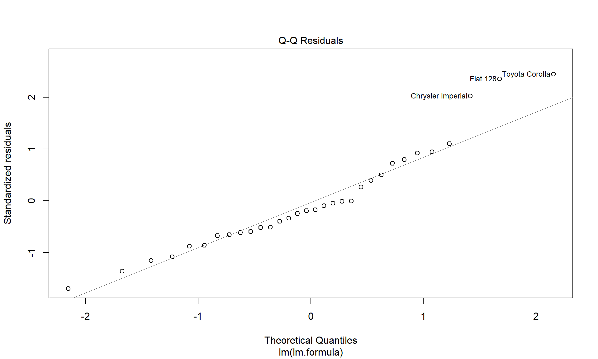

setwd("C:/PredictiveAnalytics/R") # But use the actual work folder you want to useAppendix R1: R Code
Introduction to R
Abstract
This quarto file contains a basic introduction to R, R Studio, R Markdown and Quarto. If you have no prior experience with R, this could be a good place to start, as it covers most of the necessary R functions, objects and commands to build basic models. For deeper content on R, please refer to some of the books noted below. For the corresponding conceptual material, consult the book Predictive Analytics and Machine Learning for Managers.
Introduction
This script was created by J. Alberto Espinosa for educational and training purposes. Feel free to use this material for your own work, but please do not share or duplicate without the author’s permission.
Working Directory and Project Setup
It is very important that you tell R what your work directory is. I STRONGLY recommend creating one working folder (e.g., c:\PredictivAnalytics\R) in your computer for all this work in this class and keep all your scripts and data files in that directory. R works better when all the scripts and data files for a project are in a single directory and this will make your life much easier. As you become more experienced you will learn to organize your work in folders, but to start with, it is simpler to have everything in one folder.
IMPORTANT: BY FAR, THE MOST COMMON SOURCE OF PROBLEMS using R Studio is the IMPROPER SETUP of the working folders and project environment. Please ensure that you follow these instructions. It will most definitely save you time later.
Project Directory Setup
While setting a working directory is useful, it is even better to set a project directory. When you create a project in R Studio and then open it, your working directory will be set automatically. In addition, all the data files and variables you were working with in your last session will open too. This is a very convenient feature of R Studio. In my opinion, setting a project is a MUST when working with R and it makes it very easy to switch from one project to another. It will really make your R Studio work very efficient.
To create a project for this class, select:
File -> New Project -> Existing Directory.
Then browse and navigate to your working folder and click on Create Project. That’s it. Now you can open or switch projects from the scrollable list in the upper right corner of R Studio.
Working Directory
Once you setup your project as suggested above, you don’t need to worry about defining or activating your working directory. When you open a project, the working environment will be restored. However, if you wish to define a different work directory (not recommended), you can do so with this command:
As you work with many other projects, you will probably have several working directories and you may be switching directories from time to time. To see, which is the current working directory in your R Studio environment enter:
getwd()Packages
R has tons of packages available for download from the Comprehensive R Archive Network (CRAN). You can find out more about CRAN and their available resources at: https://cran.r-project.org/
Before you can use a package, you need to install it and then load into your work environment. You install a package only once (or when you want to update to a new version). Once installed in your computer, you don’t need to install it again.
A package contains one or more libraries, each containing one or more functions and data sets ready for you to use. In contrast to the installation, you need to load the particular library you want to use after you start R. Once the library is load it, it will remain loaded until you unload it yourself or until you quit your R session.
To install packages and load libraries, please open the JAE_Packages.R, go to the command that has the install.packages() command for the package you wish to install and hit Ctrl-Enter.
To load a library from a package go to the command that has the library() or require() command for the package or library you want to load and hit Ctrl-Enter.
Useful Books
I recommend the following books:
Introduction to Statistical Learning with R (ISLR)
This is an excellent book written by some of the top scholars in statistical learning. The book also comes with its own {ISLR} package and datasets, some of which I use in the examples in this book. Please install this package so that you get access to the included data samples.
For a free PDF copy of this book and for further information on the ISLR book, their datasets, R code, and other resources see: https://www.statlearning.com/.
To load access the data sets in the {ISLR} library, just load the library:
library(ISLR)Please note that the authors have also published the Python version of their book with Python code examples and exercises, which are available on the same web site above.
To read a data sets from this (or other) web sites, for example use:
MyData <- read.table("https://www.statlearning.com/s/Credit.csv",
sep = ",",
head = T)- csv denotes a
"comma-separated"file sep = ","denotes that the data elements are separated by a comma (some files are separated by semi-colons, tabs, etc.)head = Tor head=TRUE mean that the first row of the table contains column namesrow.names = 1means that the first column does not contain data, but row names to identify the observations.
You can also use the read.csv() function, but the defaults are sep = "," and head = T, so you don’t need to specify these parameters:
MyData <- read.csv("https://www.statlearning.com/s/Credit.csv")more generally, use the following to read any data set from the web (use the parameter row.names = 1 only if the first column contains row ID’s or row names, not actual data):
MyData <- read.table("web-URL/DataFileName.data",
sep = ",",
head = T,
row.names = 1)To list the data sets in all active (loaded) libraries enter:
data()To list the data sets contained in a particular package enter:
data(package = "ISLR")Applied Predictive Modeling
This book is an excellent book to learn predictive modeling with R. The book does a comprehensive job at describing how to use the {caret} packge, which was developed by one of the book authors, Max Kuhn. The {caret} package is excellent because it does not fit models itself, but makes calls to all the main machine learning and predictive modeling libraries out there. With a single command train() you can fit just about any model by changing one parameter. For example, using the parameter method = you can quickly change a model from an OLS regression, to a tree, a random forest, or any other method, and with the trainControl() function you can quickly change the cross-validation method used by the model. This is a book I would highly recommend after reading the present book, to become more producting and sophisticated writing predictive models.
See:
http://appliedpredictivemodeling.com/
https://rdrr.io/cran/caret/man/models.html
R for Everyone, Second Edition
This is a book by Jared Lander, which is great for anyone who has never used R and wants to get up to speed quickly. It start with the basics of R installations, R Studio, packages, data structures, etc., and it ends with a nice coverage of basic statistical models. It has a nice video tutorial with 16+ hours of instruction, but it is a bit pricey.
1. R Introduction
1.1 R Overview
Notes:
A comment in a plain R script starts with a
#which tells R that it is not an actual R command, but just some documentation text.To run an R command, you can either type it below in the R console, or select the line in the script and press Ctrl-Enter.
R is a dialect of S. S was created in the Bell Labs by John Chambers and his team as an object oriented language to do data analysis, statistical modeling, simulation and graphics.
R is a dialect of S. In other words, R is an improved version of R with very flexible and powerful capabilities to model problems and analyze data. R is different than S, but it was conceptualized as an improvement to S, so most S code will run fine in R.
The name R comes from their two creators Ross Ihaka and Robert Gentleman (what a great name) from the University of Auckland, New Zealand.
R is an open source, object-oriented software programming language written specifically for data analysis:
What is open source software? It is software developed by a community of volunteers, who also maintain and update the software and all related packages and datasets. Not all open source software is free of charge, but R is free. The R community material is available at the CRAN site.
What is CRAN? It is the “Comprehensive R Archive Network” and it serves as the central repository of R software, documentation and other R resources.
See: https://cran.r-project.org/
What is object-oriented? Most modern software languages are object-oriented. All it means is that EVERYTHING you do in R gets stored in a container called an object. An object has 2 things: properties and methods. Properties are the data contained in the object; Methods are routines and functions that can be used to work with the object. They are all conveniently stored inside the object.
For example, in this command we use the lm() function to fit a regression model:
lm.fit <- lm(mpg ~ cyl + disp + hp + wt,
data = mtcars) lm() is a linear model (regression) function available in the {stats} package, which loads automatically when you start R. It will fit a predictive model to predict mpg (miles per gallon) using cylinders, displacement, horsepower and weight as predictors. The model is fit using the mtcars data set available in the {dataset} package, which also loads automatically when you start R. The results of this regression are stored in an lm() object (i.e., the function that created it), which we have chosen to name lm.fit. We could have used any name for the object.
When you run the command above you see nothing, but the results of the model are stored in the object lm.fit. For example, you can see the summary results with the summary() function:
summary(lm.fit)
Call:
lm(formula = mpg ~ cyl + disp + hp + wt, data = mtcars)
Residuals:
Min 1Q Median 3Q Max
-4.0562 -1.4636 -0.4281 1.2854 5.8269
Coefficients:
Estimate Std. Error t value Pr(>|t|)
(Intercept) 40.82854 2.75747 14.807 1.76e-14 ***
cyl -1.29332 0.65588 -1.972 0.058947 .
disp 0.01160 0.01173 0.989 0.331386
hp -0.02054 0.01215 -1.691 0.102379
wt -3.85390 1.01547 -3.795 0.000759 ***
---
Signif. codes: 0 '***' 0.001 '**' 0.01 '*' 0.05 '.' 0.1 ' ' 1
Residual standard error: 2.513 on 27 degrees of freedom
Multiple R-squared: 0.8486, Adjusted R-squared: 0.8262
F-statistic: 37.84 on 4 and 27 DF, p-value: 1.061e-10For further information on R see:
https://www.r-project.org/about.html; and https://en.wikipedia.org/wiki/R_%28programming_language%29
For frequently asked questions on R, see:
https://cran.r-project.org/doc/FAQ/R-FAQ.html
To get started with R, you can use this documentation from CRAN
https://cran.r-project.org/doc/contrib/Paradis-rdebuts_en.pdf
https://cran.r-project.org/doc/manuals/R-intro.pdf
You can install R by downloading it from a “mirror” site. The R installation files are posted in several similar sites. You can pick any mirror site, but it is recommended to pick one that is in close proximity to your location. In my experience, it is best to pick a mirror site that is more reliable. The best mirror site in the USA (Berkeley) seems to work well.
R Studio has lots of packages and resources to help you work with R. Here are a couple of useful R Studio resources:
https://www.rstudio.com/resources/ for R Studio Resources
https://www.rstudio.com/resources/cheatsheets/ for useful cheat sheets
1.2 R Packages
The power of R rests on the thousands of packages already written for R, which are publicly available at CRAN. We discuss how to install packages and load their respective libraries a bit later. To view all R packages, see:
https://cran.r-project.org/web/packages/available_packages_by_name.html
The packages necessary to follow this book are in in the R script PAML4M_1R_Packages.R. Please open this script and run all the installation commands install.packages("packagename"). This will install all the packages and their respective libraries, necessary to run the R scripts for this book. Also, pay special attention to the notes about RTools, as you may need to download and install a version of RTools to match your R version from the CRAN repository.
1.3 R Studio Overview
You can run R and write code and develop R scripts directly in the R console. However, like with most software languages, it is best to use an “Integrated Development Environment” (IDE). An IDE gives you a nice environment and tools to make it easier to develop programs. Without question the IDE of choice for R is R Studio, which is also open source and free. Chances are, you are using R Studio right now.
R Studio provides 4 different windows:
Top-Left: Script window - this is where you write, save and open your R scripts
Bottom-Left: R Console - this is where you can type R commands directly and where R displays results and messages when you run commands. If you were not using R Studio, you would only see this R Console.
Top-Right: 3 tabs: (1) Environment window - this is where you can see any R objects created or opened (e.g., variables, data tables, etc.). Notice that there is also a History tab where you can review all the R commands you have run since you started R. This is a great tool when you are trying various commands in the R Console and you want to re-trace your steps or copy-paste a batch of commands from the History to a script; (2) History – R Studio keeps track of all the commands you issue from the console. You can highlight and group of commands from the history and paste them into the active script; (3) Connections – we will not use this tab in this class, but this section helps you setup and access connections to data sources.
Bottom-Right: Model explorer - this is where you can view: files in the working directory; plots generated by R commands; packages available and installed; help displays, etc.
Special R Studio Packages: most R packages are designed to manipulate and/or analyze data. But R Studio has a number of very useful packages you can load to make your development environment more productive. These include:
R Markdown: a package to create documents with marked up text, R code, R output, graphs, etc.
Quarto: similar to R Markdown. Quarto is bundled with RStudio v2022.07.1 and higher, so there is no need to install it or update it. Quarto is used to create dynamic content with R, Python, Julia and Observable languages. Using R Markdown or Quarto is a matter of preference. Quarto is preferred if you plan to use both R and Python. It is also superior to R Markdown for formatting documents and book. For most practical purposes, R Markdown works well and will continue to be supported by R Studio for the foreseeable future.
knitr: a companion to R Markdown, which knits your markdown files into HTML, Word or PDF documents.
pandoc: an open source document converter. knitr does the knitting of text with R code and R output. pandoc does the conversion of the output to the desired format (e.g., HTML, Word, PDF, etc.)
Shiny: a package to build interactive R applications that run on the web.
ggplot2: one of the most popular and powerful packages to visualize data
dplyr: powerful library to manipulate data
tidyverse: is not a package, but a collection of other packages designed for data science work. Installing {tidiverse} will install packages like {ggplot2}, [dplyr], etc. There is a companion book by master trainers, Wickham and Grolemund.
For a complete description of available R Studio Packages, see:
2. R For Analytics
2.1 This Script
This document was generated created in Quarto, which is a great tool to program analytics work in R and generate reports by knitting the text, R code and R output in the markdown file into a Word, PDF, HTML, PowerPoint or some other file formats. I discuss R Markdown and Quarto further towards the end of this file. For now, note that R Markdown and Quarto contain 3 main types of sections:
The YAML – YAMl Ain’t Markdown Language (a recursive acronym). This is the header of the file where you place the title, sub-title, author, etc., along with the file format to knit to and whether you want a table of contents generated.
The markdown section – This is the main text section of an R Markdown or Quarto file, where you type narratives and other information.
Code Cells – are sections contained between ```{r} and ``` containing the R code to be executed. You can control whether to display just the output or results from your R scripts and/or the R code that generated it.
More information on R Markdown at the end of this file.
2.2 General Information on R and R Studio
If you need help with R or any R related tools, you can always Google, of course. But there is a Google driven search engine customized for R-related searches. This will filter out search results that are unrelated to R. Here it is. Try it:
To search and use open source R code created by others, signup for GitHub then search for R software code - you can copy all you want, it’s open source!!
A Few Ways to Run R Commands
From the R Console below, just type the command and press Enter
From the script, go to any script line and press Ctrl + Enter (PC) or Cmd + Enter (Mac)
You can run entire code cells by pressing the play icon on the top right
If you’ve been working in R for a while without saving your work in a script, you can go to the History tab on the top right window of R Studio. You can highlight any command or group of commands and either click “To Console” to run the commands, or “To Source” to copy the commands to the active script.
Getting Help
In RStudio, the help system is located in the “Help” tab
You can request help for a keyword with ??“
??"regression"Use ? to get help for a given command, e.g.:
?lm() # Help on the lm() function to build linear modelsIf you need help on a particular function contained in a specific library, you need to load that library first, and then request help. For example, to get help on the ggplot() function you need to first load the {ggplot2} library:
library(ggplot2)
help(ggplot)Vignettes – Important Documentation Supplements
You will quickly learn that the R documentation on packages and functions can be cryptic and often incomplete. This documentation is written by package developers and they often include just the minimal information required to understand the package contents. More complete documentation and code examples are usually provided in additional documents called “vignettes”, which are supplementary and optional documentation for packages and functions. Some packages have vignettes and some do not. To find out the vignettes in your installed packages”
browseVignettes()To view the vignette associated with a particular package you installed, enter:
browseVignettes("car") # Vignette for the package "car"VERY IMPORTANT: R is Case Sensitive !!!
Be sure to type upper or lower case as required For example GetWD() or GETWD() won’t work!! You must type all commands and library names exactly as they are spelled – e.g., getwd() will work!!
Tutorials
Datacamp – an excellent source of high quality tutorials https://www.datacamp.com/
Datacamp R course: https://www.datacamp.com/onboarding/learn?technology=r
Datacamp Python course: https://www.datacamp.com/onboarding/learn?technology=python
Useful Web Sites
http://www.statmethods.net/
https://support.rstudio.com/hc/en-us
https://www.rdocumentation.org/
2.3 Packages, Libraries and Views
Installing Packages
Packages
You can write lots of very powerful R Scripts, which is great, but the real power of R is in the thousands of R packages that others have already written, which are public and free.
In the R documentation, it is customary to refer to packages with curly brackets, e.g., {base}. Functions or libraries contained in these packages are usually specified like this: lm(){stats}
Base Package
R comes with a pre-installed {base} package with lots of useful libraries
help(package = "base")All other packages need to be installed and activated.
For available functions in the {base} package, see: https://stat.ethz.ch/R-manual/R-devel/library/base/html/00Index.html
Similarly, R comes with several included data sets with the base installation, which are contained in the {dataset} package
data(package = "datasets")
library(help = "datasets")Using a package is a 2 step process:
- You first need to install the package. You only need to do this once and the package will remain installed until you uninstall it.
From time to time, you may want to check to see if a package was updated. To update all packages you can use the update.packages() function.
?update.packages To update a specific package type
update.packages("packagename"). To view installed packages enter
installed.packages()- To use a library contained in a package, you need to load the library. It will remain open until you quit your R session. To load a library enter:
library(libraryname) # or
require(libraryname)Please note that some packages are installed automatically with the standard installation of R. There is no need to further install these packages. Also, some packages have dependencies (i.e., a given package needs other packages to work). In this case, all the dependent packages also get installed automatically.
Review the help documentation for these functions:
?install.packages()
?remove.packages
?update.packages
?installed.packages()
?library()
?require()You can also install packages by clicking on the Packages tab in the model viewer, clicking Install, and then following the steps. Similarly, you can also activate packages by checking the corresponding box in the Packages tab.
You rarely need to uninstall packages, but if you wish to you can do it by unchecking the corresponding box in the Packages pane, or using the command:
remove.packages()You may sometimes need to deactivate or unload packages. You can do this by un-checking the corresponding box in the Packages pane or entering this command (this does not uninstall the package, it just unloads it from the work environment):
detach("packages:PackageName")Masking
Important note about detaching packages. When you load one package, its functions may mask functions from other previously loaded packages, if they have the same function name. Most of the time, masking is not an issue, but occasionally there may be two functions with the same name in memory from different packages and one may mask the other. For example, the summarize() function is available in these two packages:
require(plyr)
require(Hmisc)Each does something different. Check it out:
?summarizeIf you want to use summarize() from the {plyr} library, you can do it 2 ways: (1) detach the {Hmisc} library; or (2) indicate with double columns which function you wish to invoke:
plyr::summarize()To list all installed packages enter:
installed.packages()To view just the package names (column 1)
installed.packages()[, 1]Then get help on that package
help(package = "base")To view all available packages go to: https://cran.r-project.org/web/packages/available_packages_by_name.html
To list available libraries enter:
library()To get documentation and a list of functions in a given package enter:
library(help = PackageName)To view the data sets available in all active packages enter:
data()To view the data sets in a particularly active package enter:
data(package = "ISLR") # Example for the ISLR packageTo load a specific data set in to memory
data(dataSetName) To list the data sets in all packages available, enter:
data(package = .packages(all.available = T))Installing Views
Views are collections of packages by function or type of analysis. You can view the various packages that are contained in a view at
http://cran.r-project.org/web/views/
Once you find a view and wish to install the packages it contains, installing the view automatically installs all the packages it contains, if not already installed. In oreder to install views, you first need to install and load the CRAN Task View “ctv” package:
install.packages("ctv")
library("ctv")Then, for example, if you want to install the “Graphics” view, use:
install.views("Graphics") # which will install all these packages:2.4 Reading Data Into R
It is recommended to place all your data sources in your Project working folder.
Many data sets, and most of the ones we will use in this class are contained in packages, so the data becomes available after you load the respective libraries. To view all data sets that either come with R or are available in loaded libraries enter:
data()To view the first 6 rows of a data set and the respective column name for example mtcars enter:
head(mtcars) # Car and gas consumption data mpg cyl disp hp drat wt qsec vs am gear carb
Mazda RX4 21.0 6 160 110 3.90 2.620 16.46 0 1 4 4
Mazda RX4 Wag 21.0 6 160 110 3.90 2.875 17.02 0 1 4 4
Datsun 710 22.8 4 108 93 3.85 2.320 18.61 1 1 4 1
Hornet 4 Drive 21.4 6 258 110 3.08 3.215 19.44 1 0 3 1
Hornet Sportabout 18.7 8 360 175 3.15 3.440 17.02 0 0 3 2
Valiant 18.1 6 225 105 2.76 3.460 20.22 1 0 3 1tail(mtcars) # Shows the last 6 rows in the table mpg cyl disp hp drat wt qsec vs am gear carb
Porsche 914-2 26.0 4 120.3 91 4.43 2.140 16.7 0 1 5 2
Lotus Europa 30.4 4 95.1 113 3.77 1.513 16.9 1 1 5 2
Ford Pantera L 15.8 8 351.0 264 4.22 3.170 14.5 0 1 5 4
Ferrari Dino 19.7 6 145.0 175 3.62 2.770 15.5 0 1 5 6
Maserati Bora 15.0 8 301.0 335 3.54 3.570 14.6 0 1 5 8
Volvo 142E 21.4 4 121.0 109 4.11 2.780 18.6 1 1 4 2You can also double-click on the data set in the environment viewer on the right to view the full table. You can also view the full table with the fix() function, which also allows you to edit the data:
fix(mtcars)While you can read multiple data sources into R (such as SPSS, SAS and Excel), I find it a lot easier to manipulate data sets in Excel and then save the datasheet as a “comma separated values” or “CSV” file. For example, many of the packages to read Excel data into R require current versions of Java or certain versions of Excel, whereas CSV files work universally.
If you want to read a CSV file from your working directory, enter:
heart <- read.table("Heart.csv",
header = T,
sep = ",")First note that we are reading a file named Heart.csv with upper case H and storing in an R data fram object named heart with lower case h. You can name your objects any way you wish but these names are case sensitive.
The header = T attribute specifies that the first row in the .csv file contains the column or variable names, which is the recommended way to do it. The sep = "," parameter specifies that the values are separated by commas.
If the .csv file is not located in the working directory, you need to specify the directory using forward slashes / (don’t use the backslashes \). Ex:
mydata <- read.table("c:/PredictiveAnalytics/R/Auto.csv",
header = T,
sep = ",")or simply move into your working directory and enter:
AutoData <- read.table("Auto.csv",
header = T,
sep = ",")You can also use the read.csv() function, which may simplify the syntax because the default parameters are header = T and "sep = ",", so you can omit these parameters:
AutoData <- read.csv("Auto.csv")By the way, you will notice that the R data frames will show up in the Enviroment tab on the top right window. You can double-click on the respective data frames to explore them. You can also explore the files with other R commands, like:
head(AutoData) # To see the column headers and first few records
names(AutoData) #To see the column (i.e., variable) names in the tableAlso note that there are a number of R packages you can use to read files from popular programs like Excel, MS Access, SPSS, SAS, etc. These are a few:
install.packages("xlsx") # Excel
install.packages("xlsxjars") # Excel
install.packages("rJava") # Excel
install.packages("foreign") # Stata, Minitab, SPSS, SAS, etc.
install.packages("XML") # XML
install.packages("rjson") # JSONWhile these packages are useful, they often become outdated because vendors like Microsoft and SASD change their file formats from time to time. However, all vendor software has functions to import into and read from .csv files. So, my advise is to convert your source files into .csv format and then read them into your data frames as explained above.
Saving Data from R to a file
Saving a data frame to a “csv” file
When you create and then manipulate a data frame in R, the data and your changes will only be available until you terminate R. This is a good thing, because you can test manipulate your data file in any way you wish and when you re-read the file from the source you will get the original fresh copy, not the changed version. But what if you wish to make permanent changes? There are a couple of things you can do:
Manipulate the data frame in any way you wish and save the script commands you used. This way, next time you read the file you can run the data pre-processing scripts as needed.
Or, you can save your changes into a different .csv file:
write.table(AutoData,
"mydata.csv",
sep = ",")The sep = "," parameter specifies the delimiter between values as a comma, which is most common and one the Excel will read.
The packages listed above for reading from various software data files also have functions for writing to data files. You can consult their respective documentation, if interested.
2.6 Working with R Objects
R is an “object-oriented” software language, therefore, it treats everything as objects. An object has two things:
- data; and
- programs or functions, encapsulated together.
When you create an object, you can then access it to run its programs/functions and read or manipulate its data. Objects can be used to create other objects using a property of object-orientation called inheritance, such that the data and programs from one object are inherited by another.
For example, we can run a regression model to predict miles per gallons using the mtcars data set:
lm(mpg ~ cyl + disp + hp + wt,
data = mtcars)
Call:
lm(formula = mpg ~ cyl + disp + hp + wt, data = mtcars)
Coefficients:
(Intercept) cyl disp hp wt
40.82854 -1.29332 0.01160 -0.02054 -3.85390 Or, we can store the model formula in a formula object and then use this object throughout the script. This is convenient when you need to specify a very long and complex formulat and use it in several parts of your script:
lm.formula <- mpg ~ cyl + disp + hp + wt
lm.formula # Check it out -- a text string which we can re-usempg ~ cyl + disp + hp + wtlm(lm.formula,
data = mtcars)
Call:
lm(formula = lm.formula, data = mtcars)
Coefficients:
(Intercept) cyl disp hp wt
40.82854 -1.29332 0.01160 -0.02054 -3.85390 The lm() function above creates an lm (linear model) object, but it isn’t stored anywhere. To store it for later reference, assign it to an object with the <- assignment operator:
lm.object <- lm(lm.formula,
data = mtcars)Two important functions that are used pervasively to retrieve important data from objects are:
summary() – displays key data stored in an object. What gets displayed changes from one object type to another
summary(lm.object)
Call:
lm(formula = lm.formula, data = mtcars)
Residuals:
Min 1Q Median 3Q Max
-4.0562 -1.4636 -0.4281 1.2854 5.8269
Coefficients:
Estimate Std. Error t value Pr(>|t|)
(Intercept) 40.82854 2.75747 14.807 1.76e-14 ***
cyl -1.29332 0.65588 -1.972 0.058947 .
disp 0.01160 0.01173 0.989 0.331386
hp -0.02054 0.01215 -1.691 0.102379
wt -3.85390 1.01547 -3.795 0.000759 ***
---
Signif. codes: 0 '***' 0.001 '**' 0.01 '*' 0.05 '.' 0.1 ' ' 1
Residual standard error: 2.513 on 27 degrees of freedom
Multiple R-squared: 0.8486, Adjusted R-squared: 0.8262
F-statistic: 37.84 on 4 and 27 DF, p-value: 1.061e-10str() – shows the “structure” of the object, i.e., just about all the variable name and sample data stored in the object
str(lm.object)List of 12
$ coefficients : Named num [1:5] 40.8285 -1.2933 0.0116 -0.0205 -3.8539
..- attr(*, "names")= chr [1:5] "(Intercept)" "cyl" "disp" "hp" ...
$ residuals : Named num [1:32] -1.568 -0.5853 -3.2569 -0.0117 0.8939 ...
..- attr(*, "names")= chr [1:32] "Mazda RX4" "Mazda RX4 Wag" "Datsun 710" "Hornet 4 Drive" ...
$ effects : Named num [1:32] -113.65 -28.6 6.13 -3.06 -9.54 ...
..- attr(*, "names")= chr [1:32] "(Intercept)" "cyl" "disp" "hp" ...
$ rank : int 5
$ fitted.values: Named num [1:32] 22.6 21.6 26.1 21.4 17.8 ...
..- attr(*, "names")= chr [1:32] "Mazda RX4" "Mazda RX4 Wag" "Datsun 710" "Hornet 4 Drive" ...
$ assign : int [1:5] 0 1 2 3 4
$ qr :List of 5
..$ qr : num [1:32, 1:5] -5.657 0.177 0.177 0.177 0.177 ...
.. ..- attr(*, "dimnames")=List of 2
.. .. ..$ : chr [1:32] "Mazda RX4" "Mazda RX4 Wag" "Datsun 710" "Hornet 4 Drive" ...
.. .. ..$ : chr [1:5] "(Intercept)" "cyl" "disp" "hp" ...
.. ..- attr(*, "assign")= int [1:5] 0 1 2 3 4
..$ qraux: num [1:5] 1.18 1.02 1.11 1.17 1.26
..$ pivot: int [1:5] 1 2 3 4 5
..$ tol : num 1e-07
..$ rank : int 5
..- attr(*, "class")= chr "qr"
$ df.residual : int 27
$ xlevels : Named list()
$ call : language lm(formula = lm.formula, data = mtcars)
$ terms :Classes 'terms', 'formula' language mpg ~ cyl + disp + hp + wt
.. ..- attr(*, "variables")= language list(mpg, cyl, disp, hp, wt)
.. ..- attr(*, "factors")= int [1:5, 1:4] 0 1 0 0 0 0 0 1 0 0 ...
.. .. ..- attr(*, "dimnames")=List of 2
.. .. .. ..$ : chr [1:5] "mpg" "cyl" "disp" "hp" ...
.. .. .. ..$ : chr [1:4] "cyl" "disp" "hp" "wt"
.. ..- attr(*, "term.labels")= chr [1:4] "cyl" "disp" "hp" "wt"
.. ..- attr(*, "order")= int [1:4] 1 1 1 1
.. ..- attr(*, "intercept")= int 1
.. ..- attr(*, "response")= int 1
.. ..- attr(*, ".Environment")=<environment: R_GlobalEnv>
.. ..- attr(*, "predvars")= language list(mpg, cyl, disp, hp, wt)
.. ..- attr(*, "dataClasses")= Named chr [1:5] "numeric" "numeric" "numeric" "numeric" ...
.. .. ..- attr(*, "names")= chr [1:5] "mpg" "cyl" "disp" "hp" ...
$ model :'data.frame': 32 obs. of 5 variables:
..$ mpg : num [1:32] 21 21 22.8 21.4 18.7 18.1 14.3 24.4 22.8 19.2 ...
..$ cyl : num [1:32] 6 6 4 6 8 6 8 4 4 6 ...
..$ disp: num [1:32] 160 160 108 258 360 ...
..$ hp : num [1:32] 110 110 93 110 175 105 245 62 95 123 ...
..$ wt : num [1:32] 2.62 2.88 2.32 3.21 3.44 ...
..- attr(*, "terms")=Classes 'terms', 'formula' language mpg ~ cyl + disp + hp + wt
.. .. ..- attr(*, "variables")= language list(mpg, cyl, disp, hp, wt)
.. .. ..- attr(*, "factors")= int [1:5, 1:4] 0 1 0 0 0 0 0 1 0 0 ...
.. .. .. ..- attr(*, "dimnames")=List of 2
.. .. .. .. ..$ : chr [1:5] "mpg" "cyl" "disp" "hp" ...
.. .. .. .. ..$ : chr [1:4] "cyl" "disp" "hp" "wt"
.. .. ..- attr(*, "term.labels")= chr [1:4] "cyl" "disp" "hp" "wt"
.. .. ..- attr(*, "order")= int [1:4] 1 1 1 1
.. .. ..- attr(*, "intercept")= int 1
.. .. ..- attr(*, "response")= int 1
.. .. ..- attr(*, ".Environment")=<environment: R_GlobalEnv>
.. .. ..- attr(*, "predvars")= language list(mpg, cyl, disp, hp, wt)
.. .. ..- attr(*, "dataClasses")= Named chr [1:5] "numeric" "numeric" "numeric" "numeric" ...
.. .. .. ..- attr(*, "names")= chr [1:5] "mpg" "cyl" "disp" "hp" ...
- attr(*, "class")= chr "lm"The str() function above shows all the object properties with their respective names pre-fixed with $. To access those values, just enter the object name followed by the $ and property name:
lm.object$coefficients # Extracting just the coefficients(Intercept) cyl disp hp wt
40.82853674 -1.29331972 0.01159924 -0.02053838 -3.85390352 cat("\n") # Blank linelm.object$fitted.values[1:10] # Extracting first 10 predicted values Mazda RX4 Mazda RX4 Wag Datsun 710 Hornet 4 Drive
22.56805 21.58530 26.05685 21.41170
Hornet Sportabout Valiant Duster 360 Merc 240D
17.80606 20.18741 15.86737 23.78953
Merc 230 Merc 280
23.19749 19.22900 cat("\n") # Blank linelm.object$residuals[1:10] # Extracting first 10 residual errors Mazda RX4 Mazda RX4 Wag Datsun 710 Hornet 4 Drive
-1.56804806 -0.58530266 -3.25685052 -0.01170091
Hornet Sportabout Valiant Duster 360 Merc 240D
0.89393888 -2.08741154 -1.56736731 0.61046532
Merc 230 Merc 280
-0.39748889 -0.02900250 Alternatively, you can get the summary() and str() without creating objects, but this is not so useful:
summary(lm(mpg ~ cyl + disp + hp + wt,
data = mtcars))
str(lm(mpg ~ cyl + disp + hp + wt,
data = mtcars))If you want to store the summary() for later use simply assign it to an object:
lm.summary <- summary(lm.object)
lm.summaryNotice in the display in the str() results that there are a few values prefixed with $. To access specific data elements from an object we can use the $ symbol, which is used to point to variables or columns in data objects.
For example, these show the regression coefficients
lm.summary$coefficients # or
summary(lm.object)$coefficientsThis shows the residuals:
lm.summary$residuals # or
summary(lm.object)$residualsNote: you can use the options() function to change how R reports results to some extent. The “scipen” attribute is useful to convert scientific notation (e.g., 1.8e-14) to actual numbers (e.g., the number with 14 zeros after the decimal point). Try it
options(scipen = "20") # scipen = "Scientify Notation Penalty"
summary(lm.object) # Check it outThe scipen (i.e., scientific penalty) value tells R to display the value in scientific if there are more than 20 zeros after the decimal point. Now try
options(scipen = "4")
summary(lm.object) # See the difference
Call:
lm(formula = lm.formula, data = mtcars)
Residuals:
Min 1Q Median 3Q Max
-4.0562 -1.4636 -0.4281 1.2854 5.8269
Coefficients:
Estimate Std. Error t value Pr(>|t|)
(Intercept) 40.82854 2.75747 14.807 1.76e-14 ***
cyl -1.29332 0.65588 -1.972 0.058947 .
disp 0.01160 0.01173 0.989 0.331386
hp -0.02054 0.01215 -1.691 0.102379
wt -3.85390 1.01547 -3.795 0.000759 ***
---
Signif. codes: 0 '***' 0.001 '**' 0.01 '*' 0.05 '.' 0.1 ' ' 1
Residual standard error: 2.513 on 27 degrees of freedom
Multiple R-squared: 0.8486, Adjusted R-squared: 0.8262
F-statistic: 37.84 on 4 and 27 DF, p-value: 1.061e-10Programs/functions that do something with objects have round brackets after them, e.g., mean(), length(), summary()
The formula mpg ~ cyl + disp + hp + wt is a typical model formula using R syntax. This function notation is used in various R commands.
The symbol <- represent an assignment in R. The lm.fit formula above runs the lm() linear model function and assigns (i.e., saves) the result to an object named lm.fit.
In many cases the = operator can be used interchangeably with <-. Most serious R developers don’t like to use the = sign because it has a special meaning in some other operations (e.g., testing for equality), but it works well, for example:
lm.object = lm(mpg ~ cyl + disp + hp + wt,
data = mtcars) Also, a simpler example:
x <- 3 + 4 # Look at the value of x in the Environment window
x # Check it out[1] 7The value resulting from computing 3 + 4 has been assigned to the variable x
These assignment commands work exactly the same:
x <- 3 + 4
x # Check it out[1] 73 + 4 -> x
x # Check it out[1] 7Please note that x <- 3 + 4 is DIFFERENT than x < - 3 + 4. The first entry assigns 3 + 4 to the variable object x. In the second entry we are evaluating if the object x is smaller than - 3 + 4. One space shift can make a huge difference. So, please ensure that when you use the assignment operator <- there is no space between the < and the -
Exploring objects
In R Studio, the content of the work space is shown in the Environment tab (top-right). Its contents can also be displayed in the console with the ls() and objects() commands
ls()
objects()To delete an object, we pass it as parameter to the rm() function (for remove) by writing it in the brackets of the command:
rm(x)2.7 Variables, Data Types, Objects, Classes and Data Structures
Overview
R, like all statistical software, uses many different data/variable types and classes. Understanding how to work with different data types and classes is key to understanding how to build and interpret models in R.
A variable of a certain type (e.g., character) will contain data of the same type. A variable class and type are two different things. For example:
x <- 2.3
class(x) # The class is numeric[1] "numeric"typeof(x) # The type is more specific -- double (i.e., with decimals)[1] "double"The best way to think of a variable is as a container. They can contain just about anything, e.g., a single value, a vector, an array of values a graph, results from an analysis or any R object:
What’s the meaning of the dot "."?
Note: a "." in a variable name is simply part of the name and nothing else; e.g., x, lm.fit, my.data are valid variable names
Simple Data Variable & Data Types
These contain single values of a given type, e.g., numeric, character, factor, date, and logical. You don’t need to declare a variable’s type. The variable type is implicitly (automatically) declared when a value is stored in the variable. Certain data types require delimiters, such as double quotes ” for character (i.e., text) data. It is often useful to check or display a particular variable data type:
Numeric Data
x <- 2.4 # Automatically declares x as numeric
y <- as.integer(2) # Declares y as an integer
x [1] 2.4y[1] 2class(x) # Check it out[1] "numeric"typeof(x)[1] "double"class(y) [1] "integer"typeof(y)[1] "integer"is.numeric(x) # Check if x is numeric[1] TRUEis.numeric(y) # Check if y is numeric[1] TRUEis.integer(x) # Check if x is an integer[1] FALSEis.integer(y) # Check if y is an integer[1] TRUECharacter Data
Note: characters are case sensitive
x <- "Alberto"
x[1] "Alberto"class(x) # Check it out[1] "character"typeof(x)[1] "character"is.numeric(x) # Check that x is NOT numeric[1] FALSEis.character(x) # Check that x is character[1] TRUEnchar(x) # Number of characters in the value of x[1] 7nchar("Alberto") # Number of characters in the literal text "Alberto"[1] 7Date Data
x <- as.Date("2016-10-20") # Converts a text string into a date value
# Note that the word "Date" is capitalized
x # Check it out[1] "2016-10-20"Also note the date format is YYYY/MM/DD, which can be changed as follows:
x <- as.Date("10/20/2016", "%m/%d/%Y") # Use upper case %Y for 4-digit years
x # Check it out[1] "2016-10-20"x <- as.Date("10/20/16", "%m/%d/%y") # Use lower case %y for 2-digit years
x # Check it out[1] "2016-10-20"class(x) # Check it out[1] "Date"typeof(x) # Note that dates are stored internally as numbers[1] "double"Note: you can use other date formats with: %a abbreviated weekday; %A weekday; %b abbreviated month; %B month.
Also, you can use the as.POSIXct() function to read date and time:
x <- as.POSIXct("2016-10-20 17:30") # Note that a space is needed after :
x # Check it out[1] "2016-10-20 17:30:00 EDT"You can subtract dates and add days to a date:
born <- as.Date("2000/2/12")
born # Check it out[1] "2000-02-12"today <- Sys.Date()
today # Check it out[1] "2024-01-05"aWeekAgo <- today - 7
aWeekAgo[1] "2023-12-29"aWeekFromNow <- today + 7
aWeekFromNow[1] "2024-01-12"ageInDays <- as.numeric(today - born) # Need to convert to numeric
ageInDays[1] 8728age <- floor(ageInDays / 360) # The floor() function rounds down decimals
age[1] 24Logical Data
Logical variables can be either TRUE or FALSE. Numerically, TRUE is identical to 1 and FALSE to 0. Logical variables and values are important to evaluate conditions
TodayIsMyBirthday <- F # Can use FALSE instead of F
class(TodayIsMyBirthday)[1] "logical"typeof(TodayIsMyBirthday)[1] "logical"is.logical(TodayIsMyBirthday)[1] TRUE2 == 3 # The double == is used to evaluate if two values are equal[1] FALSE2 != 3 # Evaluate if 2 is not (!) equal to 3[1] TRUE2 < 3 # Evaluate if 2 is smaller than 3[1] TRUEFactor Data
Text is difficult to process quantitatively without some transformation.
A factor is a special type of text data, which is like a category, but unlike free text, factors have a fixed number of unique values that repeat throughout the data.
Understanding factor variables is key in understanding regression models with categorical data and classification models (e.g., logistic regression) which predict the likely classification of an observation.
For example, house location types. Say, if there are 3 types of house locations: Rural, Urban and Suburban, we can create a factor for this data that finds the unique factors (i.e., text values) to categorize houses by location type. The factor conversion also assigns a number to each category, so that you can process things quantitatively. Take this text string vector:
x <- c("Rural", "Urban",
"Suburban", "Urban",
"Urban", "Suburban")
x # Notice that Urban and suburban are repeated, as you would expect[1] "Rural" "Urban" "Suburban" "Urban" "Urban" "Suburban"y <- as.factor(x) # Now, Convert x into a factor variable
y # Check out the 3 factors extracted out of x[1] Rural Urban Suburban Urban Urban Suburban
Levels: Rural Suburban Urbanlevels(y) # Display the unique categories in the data[1] "Rural" "Suburban" "Urban" as.numeric(y) # Check the unique number assigned to each factor[1] 1 3 2 3 3 2Complex Data Structures
R is very rich on data structures. The simple variables and data types discussed above are simple data structures. But there are more complex data structures like vectors, matrices, data frames and lists, which give R a lot of power for data manipulation. Understanding how these data structures work is key to unleashing the power of R for data analysis.
Vectors
A vector is simply a list of values, but all values must be of the same type (e.g., character, numeric, date, etc.)
R is said to be a “vectorized” language, meaning that many values are stored in vectors and that R has many convenient features to manipulate data contained in these vectors.
The Popular c() function is the vector constructor function. The c means to construct or **create” a vector with the values supplied. Vectors are convenient ways to store groups of values of the same type (e.g., coefficients, residuals, predictions, etc.)
x <- c(1, 2, 3, 2)
x # Notice that all values are numeric[1] 1 2 3 2class(x)[1] "numeric"typeof(x)[1] "double"R tries coerces data to be of a given type when values are incompatible. For example, if you try to create a vector with a number and a character, R corrects this:
z <- c(1, "al")
z[1] "1" "al"Notice that “1” above is converted to character to be compatible with “al”
x <- c(1, 2, 3, 2, 6, 3, 5)
x # Check it out[1] 1 2 3 2 6 3 5x[4] # 4th element of the vector[1] 2A negative index removes an element from the vector
x <- x[-4]
x # The 4th vector element got removed[1] 1 2 3 6 3 5One of the nice things about R vectors is that we can manipulate all the values in a vector with a simple command. For example:
y <- x * 3 # Multiplies every value of the x vector by 3
y # Check it out[1] 3 6 9 18 9 15Vectors can also hold text values (need to enclose the text in quotes)
x <- c ("ITEC 610", "ITEC 620", "ITEC 621")
x # Try it[1] "ITEC 610" "ITEC 620" "ITEC 621"x[3] # Try it[1] "ITEC 621"You can also give names to each vector element, in 2 ways
Directly:
x <- c(fname = "Alberto",
lname = "Espinosa",
title = "Professor")
x # Check it out fname lname title
"Alberto" "Espinosa" "Professor" Or with the names() function
x <- c("Alberto",
"Espinosa",
"Professor")
x # Check it out[1] "Alberto" "Espinosa" "Professor"names(x) <- c("fname",
"lname",
"title")
x # Check it out fname lname title
"Alberto" "Espinosa" "Professor" Data Frames
Data frames are fundamental to understanding how to access and manipulate data in R. The easiest way to understand a data frame is to think of it as an Excel sheet with various columns each with a column name (or think of it as a database table).
Another way to think of it is as table composed of vectors. That is, columns can contain different data types. But the data in one column has to be of one type (i.e., a vector)
$ is NOT money in a data frame, but it is how you extract a vector column from a data frame table. For example, a column named LastName in a data frame called Employees can be accessed using this name: “Employees$LastName” (note: in MS Access we would access this column with Employees.LastName)
Also, every row and column in a data frame is “indexed”. It is very important to understand the use of indices in R for data manipulation. For example, say you have a data frame named Employees with multiple columns holding employee data. You can use the following bracketed indices to access the data you need:
Employees[1, ] -- First row (all columns)
Employees[, 1] -- First column (all rows)
Employees[2, 3] -- Element in 2nd row and 3rd column
Employees[3:10, 2:4] -- Rows 3 through 10 from columns 2 throgh 4IMPORTANT: a thorough understanding of data frame and vector indices is key to understanding sub-sampling, cross-validation and machine learning. Try to understand this well.
Let’s practice with indices. First create a vector that will have the row indices for a data frame we will create shortly called MyDataFrame We will call this vector MyIndex (be careful with the capitalization)
MyIndex <- 1:8 # Creates the MyIndex vector with values 1 to 8
MyIndex # Check it out[1] 1 2 3 4 5 6 7 8Now let’s create a vector with 8 course numbers
courses <- c("ITEC 610", "ITEC 616",
"ITEC 620", "ITEC 621",
"ITEC 660", "ITEC 670",
"KSB 620", "KSB 621")
courses # Check it out[1] "ITEC 610" "ITEC 616" "ITEC 620" "ITEC 621" "ITEC 660" "ITEC 670" "KSB 620"
[8] "KSB 621" Now let’s create a vector with the pre-requisites for these 8 courses
prereqs <- c("None", "None",
"ITEC 610", "ITEC 620",
"ITEC 610", "KSB 065",
"ITEC 620", "ITEC 621")
prereqs # Check it out[1] "None" "None" "ITEC 610" "ITEC 620" "ITEC 610" "KSB 065" "ITEC 620"
[8] "ITEC 621"Now let’s create a data frame with indices, courses and prerequites:
MyDataFrame <- data.frame(MyIndex,
courses,
prereqs)
MyDataFrame # Check it out MyIndex courses prereqs
1 1 ITEC 610 None
2 2 ITEC 616 None
3 3 ITEC 620 ITEC 610
4 4 ITEC 621 ITEC 620
5 5 ITEC 660 ITEC 610
6 6 ITEC 670 KSB 065
7 7 KSB 620 ITEC 620
8 8 KSB 621 ITEC 621Now you can use the $ symbol after the data frame to reference a single column
MyDataFrame$courses[1] "ITEC 610" "ITEC 616" "ITEC 620" "ITEC 621" "ITEC 660" "ITEC 670" "KSB 620"
[8] "KSB 621" Lets look at just part of the data frame
head(MyDataFrame) # Display the first few rows MyIndex courses prereqs
1 1 ITEC 610 None
2 2 ITEC 616 None
3 3 ITEC 620 ITEC 610
4 4 ITEC 621 ITEC 620
5 5 ITEC 660 ITEC 610
6 6 ITEC 670 KSB 065tail(MyDataFrame) # Display the last few rows MyIndex courses prereqs
3 3 ITEC 620 ITEC 610
4 4 ITEC 621 ITEC 620
5 5 ITEC 660 ITEC 610
6 6 ITEC 670 KSB 065
7 7 KSB 620 ITEC 620
8 8 KSB 621 ITEC 621MyDataFrame[2, c("courses", "prereqs")] # To list selected columns for row 2 courses prereqs
2 ITEC 616 NoneMyDataFrame[, c("courses", "prereqs")] # To list selected columns for all rows courses prereqs
1 ITEC 610 None
2 ITEC 616 None
3 ITEC 620 ITEC 610
4 ITEC 621 ITEC 620
5 ITEC 660 ITEC 610
6 ITEC 670 KSB 065
7 KSB 620 ITEC 620
8 KSB 621 ITEC 621Matrices
A matrix is similar to a data frame in most respects (i.e., a table with values), except that all values must be of the same type in the entire matrix. Most often matrices contain only quantitative values, which can be easily manipulated with matrix algebra.
Matrices are important in R because some statistical routines, like some correlation functions” only work with quantitative matrices. This is how you create a matrix with 10 elements organized into 5 rows (i.e., the matrix has 2 columns, so it is a 5x2 matrix):
x.mat <- matrix(1:10, nrow = 5)
x.mat # Check it out [,1] [,2]
[1,] 1 6
[2,] 2 7
[3,] 3 8
[4,] 4 9
[5,] 5 10You could also accomplish the same thing with:
x.mat <- matrix(1:10, ncol = 2)
x.mat # Check it out [,1] [,2]
[1,] 1 6
[2,] 2 7
[3,] 3 8
[4,] 4 9
[5,] 5 10You can name the columns and rows of matrices:
colnames(x.mat) <- c("Ref No.", "Sales")
rownames(x.mat) <- c("John", "Judy", "Sally", "Moe", "Maria")
x.mat Ref No. Sales
John 1 6
Judy 2 7
Sally 3 8
Moe 4 9
Maria 5 10Lists
A list is similar to a vector but it can contain data of different types. Vectors can be used to create columns in data frames (i.e. tables), lists cannot
y <- list(name = "Alberto",
title = "Professor",
age = 16)
y # Check it out -- the data types are preserved$name
[1] "Alberto"
$title
[1] "Professor"
$age
[1] 16A list can be quite complex because its elements can be anything, that is, single values, vectors, other lists. For example (notice that we have name lists inside of a list):
friends <- list(MyName = "Alberto",
MyAge = 15,
Charlie = list(age = 20, major = "Analytics"),
John = list(age = 30, job = "Programmer"),
Dan = list(age = 40, profession = "Lawyer"),
Others = c("Joe", "Moe", "Doe"))You can extract distinct elements from a list with the $ or [[]]
friends # Check it out$MyName
[1] "Alberto"
$MyAge
[1] 15
$Charlie
$Charlie$age
[1] 20
$Charlie$major
[1] "Analytics"
$John
$John$age
[1] 30
$John$job
[1] "Programmer"
$Dan
$Dan$age
[1] 40
$Dan$profession
[1] "Lawyer"
$Others
[1] "Joe" "Moe" "Doe"str(friends) # Inspect itList of 6
$ MyName : chr "Alberto"
$ MyAge : num 15
$ Charlie:List of 2
..$ age : num 20
..$ major: chr "Analytics"
$ John :List of 2
..$ age: num 30
..$ job: chr "Programmer"
$ Dan :List of 2
..$ age : num 40
..$ profession: chr "Lawyer"
$ Others : chr [1:3] "Joe" "Moe" "Doe"friends$John # Let's get all the data for John$age
[1] 30
$job
[1] "Programmer"friends$John$job # Let's get John's job[1] "Programmer"friends[["John"]]$age
[1] 30
$job
[1] "Programmer"Data Reshaping
If you have various columns (i.e., vectors) of data of the same type and you would like to combine them into a matrix you can use the “cbind()” function. Notice below how all the values are automatically converted to text because MyIndex values cannot be numbers – all elements in a matrix must be of the same type.
My.Matrix <- cbind(MyIndex,
courses,
prereqs)
My.Matrix MyIndex courses prereqs
[1,] "1" "ITEC 610" "None"
[2,] "2" "ITEC 616" "None"
[3,] "3" "ITEC 620" "ITEC 610"
[4,] "4" "ITEC 621" "ITEC 620"
[5,] "5" "ITEC 660" "ITEC 610"
[6,] "6" "ITEC 670" "KSB 065"
[7,] "7" "KSB 620" "ITEC 620"
[8,] "8" "KSB 621" "ITEC 621"class(My.Matrix)[1] "matrix" "array" Or, if you would like to combine the vectors into a data.frame, you can use the data.frame(). Notice how all the values can now be of different types
My.DataFrame <- data.frame(MyIndex,
courses,
prereqs)
My.DataFrame MyIndex courses prereqs
1 1 ITEC 610 None
2 2 ITEC 616 None
3 3 ITEC 620 ITEC 610
4 4 ITEC 621 ITEC 620
5 5 ITEC 660 ITEC 610
6 6 ITEC 670 KSB 065
7 7 KSB 620 ITEC 620
8 8 KSB 621 ITEC 621class(My.DataFrame)[1] "data.frame"Subsampling
The concept of sub-sampling is CENTRAL TO Cross-Validation and Machine Learning.
Note: we will discuss this in more depth later on, but here is some R code to get you thinking about machine learning
library(MASS) # Contains the Boston housing data set
nrow(Boston) # This function counts the total rows in the Boston dataset = 506[1] 506The next function set.seed() sets the first number of the random number generator. If you remember the random number tables in old statistics book, they contain a long sequence of random numbers, each between 0 and 1. You can pick the first 100 to get 100 random numbers. But if you re-sample starting with the first value you will get the same 100 values. This is OK if you want a repeatable result for demonstration purposes. But often, when you re-sample you want to get a different set of random numbers. In such a case, you just need to change the random seed. Let’s illustrate this with the random seed set to 1 (i.e., start with the first random number)
set.seed(1) Now, let’s generate a subset of the Boston data set containing a sub-sample of 70% of the observations selected randomly. In Machine Learning, we would use this 70% to train the model, which we would then test with the remaining 30%. We will cover this in more depth later on, but let’s see how to draw the 70% train sub-sample.
First, let’s create a vector named train, which we will use as an index vector to select random rows of observations from the data set. In the command below we use the function nrow() to extract the number of rows of data in the Boston data set. We then take the sequence of numbers from 1 to nrow(Boston) (i.e., 1,2,3,,,,506) (i.e., all rows available) and create a random index vector with 70% of these values. We will use this vector will be used later to select 70% of the rows or observations from the Boston data set.
train <- sample(1:nrow(Boston),
0.7 * nrow(Boston))
train[1:100] # Check out the first 100 values in the index vector [1] 505 324 167 129 418 471 299 270 466 187 307 481 85 277 362 438 330 263
[19] 329 79 213 37 105 217 366 165 290 492 382 89 428 463 289 340 419 326
[37] 490 42 422 111 404 412 20 44 377 343 70 121 40 172 25 375 248 198
[55] 378 39 435 298 390 280 160 14 130 45 402 22 206 230 193 371 104 501
[73] 255 450 436 103 331 13 296 483 176 345 279 110 84 359 29 141 252 406
[91] 221 465 108 304 33 443 149 287 102 145length(train) # 354 (70%) observations in the train data set[1] 354Now we can use the index [train, ] to select the 70% training observations from the data set. Let’s draw the subset and store it in a new data frame object named Boston.train:
Boston.train <- Boston[train, ]Note that I used a "," in the [train, ] index above. Can you tell why we placed a comma inside the index? It is because Boston is a data frame containing rows and columns. An index for a data frame needs to specify the specific row and column to access, separated with a comma. Since train is before the comma, it will select all the rows contained in the train index vector. Since there is nothing after the comma, it will select all available columns in the data frame. I chose the name Boston.train to store this subset for later use.
Boston.train[1:10, 1:6] # Check out the first 10 row and 6 columns crim zn indus chas nox rm
505 0.10959 0 11.93 0 0.573 6.794
324 0.28392 0 7.38 0 0.493 5.708
167 2.01019 0 19.58 0 0.605 7.929
129 0.32543 0 21.89 0 0.624 6.431
418 25.94060 0 18.10 0 0.679 5.304
471 4.34879 0 18.10 0 0.580 6.167
299 0.06466 70 2.24 0 0.400 6.345
270 0.09065 20 6.96 1 0.464 5.920
466 3.16360 0 18.10 0 0.655 5.759
187 0.05602 0 2.46 0 0.488 7.831nrow(Boston.train) # Check the number of rows of this subset[1] 3542.8 Working with Text
The subject of text analytics is outside the scope of this book, but R is very powerful for manipulating text, so I illustrate a few basic functions next.
You can Concatenate text with the paste() function. Note that the default separator in the paste() function is a blank space
MyText <- paste("My", "Name", "is", "Alberto") # To store it in a variable
MyText # Note that sub-strings are separated by a blank space by default[1] "My Name is Alberto"But you can change the separator with the sep = attribute
# to change default separator to "-"
paste("My", "Name", "is", "Alberto", sep = "-") [1] "My-Name-is-Alberto"# to eliminate the blank space
paste("My", "Name", "is", "Alberto", sep = "") [1] "MyNameisAlberto"You can also concatenate literal text enclosed in quotes with text contained in variables without quotes:
# To create a variable that contains text
MyName <- "Alberto"
# And another variable
MyCourse <- "Predictive Analytics"
# To embed variables
paste("My", "Name", "is", MyName, "and I teach", MyCourse) [1] "My Name is Alberto and I teach Predictive Analytics"The sprintf() does the same, but it places variable contents in each instance of %s
sprintf("My Name is %s and I teach %s", MyName, MyCourse)[1] "My Name is Alberto and I teach Predictive Analytics"In contrast to paste(), the c() function concatenates into a vector
# Creates a vector with 4 elements
MyText <- c("My", "Name", "is", "Alberto")
MyText[1] "My" "Name" "is" "Alberto"Which you can then collapse into a single text string
# To concatenate into a string with no spaces
paste(MyText, collapse = "") [1] "MyNameisAlberto"# Or with spaces
paste(MyText, collapse = " ") [1] "My Name is Alberto"2.9 Functions
Functions can be either “built-in” (available in the base package or other installed packages); pre-programmed in packages, or “user-defined” (written in your R script)
Built-In Functions
There are thousands of built in functions in R. Many come in the {stats} package and available when you run R and others are available in libraries when you load them. Here are a few examples:
x <- c(2, 3, 6) # Vector constructor function
mean(x) # Statistical mean function[1] 3.666667Again, there are many pre-programmed functions in packages. Each package has its own programmed functions, which are at the core of what we do with R packages. For example, the lm() function we used above is a function that fits a linear regression model, which is available in the {stats} package.
User-Defined Functions
Built-in functions didn’t appear out of thin air. Someone programmed them for you to use. But you can also write your own functions. User-defined functions in involve two actions:
- Creating/defining the function, and then
- Invoking (i.e., using) the function when needed
You can create any function with the function() function (pardon the redundancy). The steps that the function executes are enclosed within curly brackets { }. To run a function you have to highlight and execute all the commands (in between { and }) associated with the function, which will load the function commands into memory. Once you do this you can use the function any time until you shut down R.
Some functions require parameters, others don’t. A parameter is a variable in the function, which requires that we pass one or more values (one for each parameter) to the function, which the function then uses to calculate something.
For example, ls() is a built-in function that lists all active objects and does not require parameters. In contrast, mean(x) is a function that that requires a vector x as a parameter, which the function will use to compute a mean of all the elements in the vector. Other functions like data() can be used without parameters (to view all data sets available in the environment) or with parameters like data(package = "ISLR") (to view the data set in a specific package).
Let’s create a simple function that displays “This is my R World!!” We will call this function MyWorld() and will not require any parameters – i.e., we don’t need to pass any data inside the parentheses.
We first create the function and place the respective instructions within curly brackets { }
MyWorld <- function() # No parameters/arguments
{print("This is my R World!!")}Now that we have defined the function MyWorld(), highlight all the command lines from MyWorld all the way to the ending curly bracket. This will cause the function to load into your environment and be ready to use any time until you exit R. Notice that nothing is printed in the output. This is because we are not telling R to print anything yet. We are just defining what the function will do. Once you run the function, it will execute the print command.
Now you can run the function:
MyWorld()[1] "This is my R World!!"Once a function is created and executed, it is available for use until you terminate the R session
Now let’s write a function with parameters/arguments. Let’s suppose what you want to custom tailor the MyWorld() function to be anyone’s world. This means that you have to pass the world owner’s name to the function. We need to write a new function that will accept one parameter. Let’s call it AnyonesWorld():
AnyonesWorld <- function(who) # "who" is the parameter
{
print(paste("This is ", who, "'s R World", sep = ""))
} Notice a few things above. First, we put the curly brackets in separate lines. It really doesn’t matter as long as all the function commands are in between the brackets. But many programmers like to do this to make the function code easy to spot in the script. Also, not that we specified who as the parameter for this function. So whatever name we input when we invoke the function will be replaced in the code any time the parameter who is invoked.
Now let’s execute the function but enter who’s world it is (we have a few)
AnyonesWorld("Alberto") # Requires that we enter an argument[1] "This is Alberto's R World"AnyonesWorld("Joe") # Try any name you wish[1] "This is Joe's R World"AnyonesWorld("Sally")[1] "This is Sally's R World"Functions are useful when you need to do complex calculations and return the results. For example to write a function that will return the squared value of a number x, we make x the parameter and then specify what we want to return, i.e., it’s squared value
# Whatever we enter in SquareMe(x) will be squared
SquareMe <- function(x)
{return(x^2)}Now run the function definition above and then invoke the function below to see how it works:
SquareMe(4)[1] 16Note: the function above is a simple illustration in which the function fits in one line. Typically, functions span many lines, in which case it is customary, for readability, to put the open and closing curly brackets in separate lines, For example, let’s create a function: that takes a value, then adds 2 and then squares this sum
x is a parameter we are passing to the function. Here is another example. Let’s say that we want to take a value, square it and then add 2 to it”
SquareMePlus2 <- function(x)
{
y <- (x ^ 2) + 2
return(y)
} Now run the function commands above and then invoke the function as follows:
SquareMePlus2(4) # i.e., (4 ^ 2) + 2 = 18[1] 182.10 Program Control: If’s
Most R scripts for this course will simply have a “stack” of commands that will execute sequentially. You can execute command stacks in full by highlighting the respective lines and then Ctrl-Enter or one line at a time. However, there will be times when you want to execute some lines only if some condition is met, or there may be times when you want to execute some lines multiple times in a loop. This is called “conditional logic” in software programming. In such cases, you will need to understand how to control the program execution sequence (i.e., logic). There are several types of program controls, but the most common ones are: if/else’s and loops.
if/else
Example, change the value of MyValue below to see how the if control works
- the if condition must be inside the curly brackets
- the else condition too; IMPORTANT: the “else” statement must be in the same line as the closing bracket } of the first condition or the command will fail
MyValue <- 2
if (MyValue > 10)
{print("Your number is large")} else
{print("Your number is small")}[1] "Your number is small"You can also use the ifelse() which works like IF functions f in Excel
MyValue <- 5
ifelse(MyValue > 10,
"Large Number", # If true
"Small Number") # If not true[1] "Small Number"You can use ifelse() with vectors too:
MyValue <- c(5, 10, 15, 20) # Works with vectors too
ifelse(MyValue > 10,
"Large Number",
"Small Number")[1] "Small Number" "Small Number" "Large Number" "Large Number"This is a more complete example that gets several input values for a loan application, does a number of calculations and then makes a decline/approve decision recommendation. Let’s do it in steps:
Input data:
CarPrice <- 30000
DownPayment <- 2000
LoanYears <- 5
AnnualInterest <- 0.04 # i.e., 4%
AnnualIncome <- 60000
MonthlyObligations <- 2300Then do the necessary calculations:
LoanAmount <- CarPrice - DownPayment
LoanMonths <- LoanYears * 12
MonthlyInterest <- AnnualInterest / 12
MonthlyPmt <- LoanAmount * MonthlyInterest /
(1 - (1 / (1 + MonthlyInterest) ^ LoanMonths))
MonthlyPmt <- round(MonthlyPmt, digits = 2) # Let's round to two decimals.
MonthlyIncome <- AnnualIncome / 12
DisposableIncome <- MonthlyIncome - MonthlyObligations
PmtToDisposableRatio <- round(MonthlyPmt / DisposableIncome, digits = 4)Finally, display results. Notice that I use the concatenation function cat() instead of print(), which allows you to add line brakes with "\n" and eliminate the annoying line indices, e.g., [1].
cat(paste("For a loan amount of", LoanAmount,
"for", LoanYears, "years", "or", LoanMonths, "months", "\n",
"at annual interest rate of", 100 * AnnualInterest, "percent","\n",
"and a disposable income of", DisposableIncome, "the:", "\n\n"))For a loan amount of 28000 for 5 years or 60 months
at annual interest rate of 4 percent
and a disposable income of 2700 the: cat(sprintf("Monthly payment is $ %s", MonthlyPmt), "\n")Monthly payment is $ 515.66 cat(sprintf("Monthly payment to disposable income ratio is %s",
PmtToDisposableRatio), "\n\n")Monthly payment to disposable income ratio is 0.191 if (PmtToDisposableRatio > 0.2) # i.e., loan payment is more than 20% if income
{cat("Your loan application has been declined")} else
{cat("Your loan application has been approved")}Your loan application has been approved2.11 Program Control: Loops
Loops are one of the most powerful software features in just about any language. A loop allows you to perform a number of commands several time until some condition is met to terminate the loop. Typically, there is an index or value that changes in each loop. For example, we may want to perform a bunch of calculations on the first 10 rows of a table.
There are various types of loops, but the most common are for and while loops. for loops performs a loop “for” each of the values specified. When the values end the loop ends. In contrast while loops will continue to loop “while” a certain condition is met. I illustrate both below.
CAUTION: Improperly written loops are one of the most common sources of software malfunction. In particular, loops that do not specify the for or while condition correctly may cause a program to go into an infinite loop that never terminates. You ever wonder why a program spins and spins some times. Most likely, it is an infinite loop somewhere in the code.
Example of a for loop
In the first loop, i will take the value of 1. In the second loop it will take the value of 2, etc. In the last loop, i will take a value of 10 and the loop will terminate after that.
This script will NOT display the R code or the output
for (i in 1:10) {
print(paste("The number is", i)) # paste() concatenates strings
}[1] "The number is 1"
[1] "The number is 2"
[1] "The number is 3"
[1] "The number is 4"
[1] "The number is 5"
[1] "The number is 6"
[1] "The number is 7"
[1] "The number is 8"
[1] "The number is 9"
[1] "The number is 10"If you want i to increment by more than 1 you can use the seq() function. In the example below i takes values in the sequence from 1 to 10, but in increments of 2:
for (i in seq(1,10,2)) {
print(paste("The number is", i)) # paste() concatenates strings
}[1] "The number is 1"
[1] "The number is 3"
[1] "The number is 5"
[1] "The number is 7"
[1] "The number is 9"Example of a “while” loop
In a while loop, the loop runs while a condition is true. These are a bit trickier because While loops generally require initializing a variable with a value, which will change and which we will need to check in the while condition. In the example below, we control the while loop with the variable i:
i <- 1 # This is like a counter, which we initialize to 1
while (i <= 10) {
print(paste("The number is", i))
# we need to increment i in each loop or you will have an endless loop
i <- i + 1
}[1] "The number is 1"
[1] "The number is 2"
[1] "The number is 3"
[1] "The number is 4"
[1] "The number is 5"
[1] "The number is 6"
[1] "The number is 7"
[1] "The number is 8"
[1] "The number is 9"
[1] "The number is 10"** Important:** omitting the counter increment command <- i + 1 would cause i to not increment, which will create an infinite loop that never stops. Can you see why?
2.12 Simple Statistics with R
Working with Data
Let’s first open a data set diamonds contained in the package {ggplot2}:
require(ggplot2) # Contains the "diamonds" data set
data(diamonds)
attach(diamonds)Note: certain R commands and models require that a data set be active in memory, which we accomplish with the attach() function. Let’s look at the first 6 records with the head() function:
head(diamonds)# A tibble: 6 × 10
carat cut color clarity depth table price x y z
<dbl> <ord> <ord> <ord> <dbl> <dbl> <int> <dbl> <dbl> <dbl>
1 0.23 Ideal E SI2 61.5 55 326 3.95 3.98 2.43
2 0.21 Premium E SI1 59.8 61 326 3.89 3.84 2.31
3 0.23 Good E VS1 56.9 65 327 4.05 4.07 2.31
4 0.29 Premium I VS2 62.4 58 334 4.2 4.23 2.63
5 0.31 Good J SI2 63.3 58 335 4.34 4.35 2.75
6 0.24 Very Good J VVS2 62.8 57 336 3.94 3.96 2.48Let’s get diamond price means by cut
aggregate(price ~ cut,
diamonds,
mean) cut price
1 Fair 4358.758
2 Good 3928.864
3 Very Good 3981.760
4 Premium 4584.258
5 Ideal 3457.542# Works like SQL command: SELECT Avg(Price) FROM diamonds GROUP BY cutTo group by more than one attribute use the + operator
aggregate(price ~ cut + color,
diamonds,
mean) cut color price
1 Fair D 4291.061
2 Good D 3405.382
3 Very Good D 3470.467
4 Premium D 3631.293
5 Ideal D 2629.095
6 Fair E 3682.312
7 Good E 3423.644
8 Very Good E 3214.652
9 Premium E 3538.914
10 Ideal E 2597.550
11 Fair F 3827.003
12 Good F 3495.750
13 Very Good F 3778.820
14 Premium F 4324.890
15 Ideal F 3374.939
16 Fair G 4239.255
17 Good G 4123.482
18 Very Good G 3872.754
19 Premium G 4500.742
20 Ideal G 3720.706
21 Fair H 5135.683
22 Good H 4276.255
23 Very Good H 4535.390
24 Premium H 5216.707
25 Ideal H 3889.335
26 Fair I 4685.446
27 Good I 5078.533
28 Very Good I 5255.880
29 Premium I 5946.181
30 Ideal I 4451.970
31 Fair J 4975.655
32 Good J 4574.173
33 Very Good J 5103.513
34 Premium J 6294.592
35 Ideal J 4918.186To aggregate more than one column, use cbind()
aggregate(cbind(price, carat) ~ cut,
diamonds,
mean) cut price carat
1 Fair 4358.758 1.0461366
2 Good 3928.864 0.8491847
3 Very Good 3981.760 0.8063814
4 Premium 4584.258 0.8919549
5 Ideal 3457.542 0.7028370Note the cbind() function binds columns together. To bind rows use rbind()
Simple Graphics
R Base Package:
Plots
boxplot(diamonds$carat) # Boxplot of a single variableplot(diamonds$carat,
diamonds$price) # Scatterplot of 2 variables
Histograms
hist(diamonds$carat) # Histogram of 1 variableLet’s add some labels
hist(diamonds$carat,
main = "Carat Histogram",
xlab = "Carats") # w/labelshist(diamonds$price,
main = "Diamond Price",
xlab = "Price")Note: graphs start with a primary graph. A primary graph is rendered as a new graph output. Once the primary graph is rendered you can add layers to the graph to include things like labels, graph name, trend lines, colors, etc. Graph layers only work once a primary graph has been rendered.
For example, qqplots are popular for detecting non-normality in the data – if the dots do not align with the straight line the data deviates from normality:
qqnorm(diamonds$price) # A primary graph rendering the qqplot
qqline(diamonds$price) # A layer rendering a qqline on top of the qqplotThe data is not very normal. Maybe logging the data will help:
hist(log(diamonds$price),
main = "Diamond Log(Price)",
xlab = "Price")qqnorm(log(diamonds$price))
qqline(log(diamonds$price))# Yes it helps align the dots to the line, yielding a more normal distribution.ggplot2
{ggplot2} is one of the most popular and powerful graphic packages in R. {lattice} is another popular graph package. When you install the {ggplot2} package it will install the {lattice} package automatically. Let’s look at {ggplot2}.
library(ggplot2) # Activate the library firstImportant: {ggplot2} has a unique syntax. This syntax derives from a widely followed Grammar of Graphics by Wilkinson (2005) and the Layered Grammar of Graphics by Wickham 2010.
Here is an excellent book on how to use {ggplot2} written by the package author. This book states that the grammar of graphics tells us that a statistical graphic is a mapping from data to aesthetic attributes (color, shape, size) of geometric objects or geoms (points, lines, bars). The plot may also contain statistical transformations of the data and is drawn on a specific coordinate system. Faceting can be used to generate the same plot for different subsets of the data set. It is the combination of these independent components that make up a graphic. Here is the book:
https://ggplot2-book.org/index.html
This book states that “the grammar [of graphics] tells us that a statistical graphic is a mapping from data to aesthetic attributes (colour, shape, size) of geometric objects (points, lines, bars). The plot may also contain statistical transformations of the data and is drawn on a specific coordinate system. Facetting can be used to generate the same plot for different subsets of the dataset. It is the combination of these independent components that make up a graphic.
Histograms – the geometric object is geom_histogram and the aesthetic is x = carat:
ggplot(data = diamonds) +
geom_histogram(aes(x = carat))We can save graphs in objects. Here we define and save a graph, but no plot yet:
g <- ggplot(diamonds,
aes(x = carat,
y = price)) We then add properties, e.g., type of graph, and display it:
g + geom_point()We can then change the properties if you wish, e.g., add color
g + geom_point(aes(color = color))g + geom_point(aes(color = color)) +
facet_wrap(~color) # Faceted by colorg + geom_point(aes(color = color)) +
facet_grid(cut~color) # Faceted in gridsSimple Statistics
Set the seed number first using the set.seed() function. But before you do that, set the random number generator (RNG) default using RNGkind(sample.kind="default"). Random number generators as based on long tables that contain random numbers. The seed is the first number in the random table to use. If you only need one random sample, the seed number is not important – just pick any seed number. But if you will be re-sampling several times, use the same seed to draw the same sample each time (i.e., when you want repeatable results), or use different seeds to draw different samples each time. There are different kinds of RNG’s and which one you pick will not make a big difference because the numbers will still be random. But the type you chose will affect how the random numbers will be generated and rounded and using the same default I use will make it more likely that your results will match mine.
RNGkind(sample.kind = "default")
set.seed(1)Generating a random sample of 50 observations from a normal distribution
x <- rnorm(50)
x # Check out the sample [1] -0.62645381 0.18364332 -0.83562861 1.59528080 0.32950777 -0.82046838
[7] 0.48742905 0.73832471 0.57578135 -0.30538839 1.51178117 0.38984324
[13] -0.62124058 -2.21469989 1.12493092 -0.04493361 -0.01619026 0.94383621
[19] 0.82122120 0.59390132 0.91897737 0.78213630 0.07456498 -1.98935170
[25] 0.61982575 -0.05612874 -0.15579551 -1.47075238 -0.47815006 0.41794156
[31] 1.35867955 -0.10278773 0.38767161 -0.05380504 -1.37705956 -0.41499456
[37] -0.39428995 -0.05931340 1.10002537 0.76317575 -0.16452360 -0.25336168
[43] 0.69696338 0.55666320 -0.68875569 -0.70749516 0.36458196 0.76853292
[49] -0.11234621 0.88110773Generating samples and sub-samples. To select 100 random numbers from 1 to obs (e.g., 1,000).
# Suppose you have 1000 observations, indexed from 1 to 1000, and you want to draw a random of 100 observations. The first thing to do is to create a vector containing 100 random numbers from 1 to 1000 to be used to extract the respective rows from the data set:
train <- sample(1:1000, 100) # This is a vector with 100 random numbers
train # Check it out [1] 924 620 304 545 557 661 287 614 145 329 487 855 851 630 498 858 816 619
[19] 576 490 736 103 316 51 733 290 650 129 811 955 282 143 442 285 920 682
[37] 48 501 716 511 295 536 693 214 808 737 339 346 675 43 1 29 590 918
[55] 838 796 628 233 293 573 369 451 86 483 327 622 355 819 812 49 361 978
[73] 242 440 758 817 818 247 751 219 135 111 532 377 408 977 565 912 467 356
[91] 130 984 65 932 359 105 124 77 218 610But what if your data set changes or if you want a different random sample size? It is best not to hard code 1000 or 100 or any other number into your code. Rather, it is customary to store values in variables and then use the variables, which makes it much easier to change values when needed. For example, select a percentage (e.g., 75%) of random numbers from 1 to 1000:
obs <- 1000 # Store the data set size in a variable
# You could also use obs <- nrow(dataset), which will store the number of observations in the dataset in the variable obs. Then extract the sample using the variable obs:
train <- sample(1:obs, 0.75 * obs)
train [1] 194 19 273 418 971 543 419 867 686 403 749 587 16 40 777
[16] 818 604 634 664 138 719 500 761 672 229 423 421 140 126 526
[31] 508 628 988 271 130 577 512 451 504 457 358 785 724 127 645
[46] 41 876 927 885 840 548 305 809 413 576 129 309 958 874 441
[61] 856 117 944 470 614 562 336 798 766 349 898 72 894 590 474
[76] 168 501 974 951 455 969 356 625 234 484 121 73 539 553 15
[91] 941 294 62 390 644 35 381 993 77 105 697 327 665 31 549
[106] 767 743 28 908 148 797 957 810 572 284 334 897 268 93 934
[121] 300 714 610 282 241 33 906 437 939 86 217 792 805 108 967
[136] 270 751 209 338 609 736 584 565 568 928 711 434 768 201 354
[151] 357 931 989 514 116 643 422 233 866 668 439 197 220 462 299
[166] 235 513 926 173 83 833 407 324 720 731 185 615 765 180 464
[181] 674 733 493 675 444 167 49 471 702 673 291 653 247 854 741
[196] 316 346 804 820 56 25 81 472 329 494 734 890 715 480 104
[211] 3 179 659 161 384 436 889 260 717 60 448 488 181 510 133
[226] 618 428 547 377 279 888 676 375 611 817 891 150 915 169 598
[241] 467 903 530 556 975 91 164 544 479 51 119 465 976 864 904
[256] 959 89 533 591 850 704 933 71 786 315 219 414 985 570 842
[271] 626 546 834 782 574 872 830 925 955 633 392 281 983 5 330
[286] 492 20 183 857 79 847 69 732 473 748 296 141 132 42 635
[301] 776 193 909 397 264 177 595 984 368 433 563 139 520 320 115
[316] 453 450 685 396 963 218 159 750 495 109 519 624 913 393 648
[331] 871 45 112 27 222 266 158 945 868 386 175 880 261 166 992
[346] 340 92 412 652 99 516 128 845 796 637 657 435 846 192 85
[361] 302 208 706 383 277 87 916 503 949 764 515 841 312 650 58
[376] 308 485 111 342 597 772 755 122 44 907 48 100 313 232 481
[391] 360 11 310 641 799 256 54 146 656 995 328 6 620 689 942
[406] 250 802 258 288 917 705 860 994 523 966 779 198 399 567 182
[421] 912 61 348 887 986 65 691 735 362 66 245 206 859 380 683
[436] 153 17 190 875 953 863 823 924 343 276 884 449 226 950 341
[451] 486 739 303 84 498 694 775 639 363 754 286 367 849 525 243
[466] 932 257 325 110 36 851 877 225 999 990 371 900 306 899 670
[481] 794 352 97 726 948 883 478 242 410 387 207 815 701 870 1
[496] 578 979 137 502 398 671 351 248 80 469 617 460 710 622 176
[511] 251 554 12 476 630 858 848 744 8 693 679 940 973 30 9
[526] 1000 721 361 649 425 43 278 978 411 812 102 781 118 970 323
[541] 816 385 322 211 463 947 566 758 682 901 997 552 892 13 295
[556] 703 70 718 824 365 345 631 964 737 987 442 865 708 262 895
[571] 200 607 280 461 612 293 14 667 902 339 790 285 579 709 237
[586] 483 223 569 59 808 655 555 123 844 420 561 24 221 394 252
[601] 170 712 716 753 527 376 713 174 680 896 811 466 29 793 575
[616] 369 511 447 496 605 326 759 722 518 774 382 289 125 416 923
[631] 482 144 836 149 134 827 401 21 7 355 298 374 94 700 806
[646] 445 267 681 930 290 593 124 332 532 730 852 961 727 688 581
[661] 551 415 770 696 586 690 760 314 491 803 972 738 919 402 135
[676] 172 795 186 2 773 822 57 589 378 244 800 456 636 32 490
[691] 965 507 742 545 646 596 747 602 162 459 75 131 960 853 160
[706] 88 550 893 151 443 274 843 304 698 801 538 763 23 647 337
[721] 771 740 878 311 107 372 287 789 214 292 783 613 446 254 199
[736] 22 427 333 52 263 522 829 825 113 454 114 662 642 619 231Random sample of 10% with replacement
obs <- 1000
X <- sample(1:obs, size = 0.1 * obs, replace = T)
# replace = T means that values in the sample can repeat in the sample
X # Check it out [1] 750 42 768 957 560 129 376 73 637 867 523 744 314 228 689 933 823 842
[19] 789 701 996 407 476 928 25 280 507 332 890 186 517 159 721 518 430 669
[37] 851 346 475 321 577 393 582 448 492 170 484 498 793 703 324 457 73 235
[55] 569 551 318 804 58 787 900 931 567 349 568 272 131 425 868 660 910 14
[73] 430 993 108 897 64 876 483 83 920 459 626 407 306 706 487 382 788 462
[91] 632 752 458 149 929 375 800 756 284 796Bootstrapping
It is a statistical sampling method that can be used in many statistical procedures. We will not cover bootstrapping methods in this R tutorial, but we will go over this later. Bootstrapping is about re-sampling wiht replacement. Suppose you have 100 observations. If you get a sample of 100 with replacement, some of these 100 values will be repeated. If you re-sample another 100 values with replacement, you will get a different sample because the repeated values are likely to be different ones. For example, try this a few times:
obs <- 100 # Let's illustrate with a smaller sample
boot.x <- sample(1:obs,
size = obs,
replace = T)
boot.x # Notice all the values that are re-selected in the sample [1] 71 4 89 30 30 37 32 10 45 23 9 33 55 75 84 84 55 98 73 47 13 5 63 3 26
[26] 17 65 46 48 8 83 82 2 46 86 36 55 68 78 61 75 45 16 25 36 69 91 95 27 2
[51] 96 46 87 84 70 69 83 18 98 85 84 90 96 39 74 11 85 13 63 20 38 71 29 81 8
[76] 38 32 24 70 87 74 11 10 14 43 80 46 27 1 68 39 54 23 96 16 40 20 4 9 80Other basic statistics in R
obs <- 1000
x <- sample(1:obs,
size = 0.10 * obs,
replace = T)
mean(x) # Sample mean[1] 525.86median(x) # Sample median[1] 539.5max(x) # Maximum value in the sample[1] 985min(x) # Minimum value in the sample[1] 65sd(x) # Sample standard deviation[1] 240.9954var(x) # Sample variance[1] 58078.77summary(x) # Sample summary statistics Min. 1st Qu. Median Mean 3rd Qu. Max.
65.0 349.5 539.5 525.9 723.5 985.0 hist(x) # Histogram of sample valuesqqnorm(x) # QQ Plot of x
qqline(x) # QQ Line of xsummary(mtcars) # Summary statistics on a dataset mpg cyl disp hp
Min. :10.40 Min. :4.000 Min. : 71.1 Min. : 52.0
1st Qu.:15.43 1st Qu.:4.000 1st Qu.:120.8 1st Qu.: 96.5
Median :19.20 Median :6.000 Median :196.3 Median :123.0
Mean :20.09 Mean :6.188 Mean :230.7 Mean :146.7
3rd Qu.:22.80 3rd Qu.:8.000 3rd Qu.:326.0 3rd Qu.:180.0
Max. :33.90 Max. :8.000 Max. :472.0 Max. :335.0
drat wt qsec vs
Min. :2.760 Min. :1.513 Min. :14.50 Min. :0.0000
1st Qu.:3.080 1st Qu.:2.581 1st Qu.:16.89 1st Qu.:0.0000
Median :3.695 Median :3.325 Median :17.71 Median :0.0000
Mean :3.597 Mean :3.217 Mean :17.85 Mean :0.4375
3rd Qu.:3.920 3rd Qu.:3.610 3rd Qu.:18.90 3rd Qu.:1.0000
Max. :4.930 Max. :5.424 Max. :22.90 Max. :1.0000
am gear carb
Min. :0.0000 Min. :3.000 Min. :1.000
1st Qu.:0.0000 1st Qu.:3.000 1st Qu.:2.000
Median :0.0000 Median :4.000 Median :2.000
Mean :0.4062 Mean :3.688 Mean :2.812
3rd Qu.:1.0000 3rd Qu.:4.000 3rd Qu.:4.000
Max. :1.0000 Max. :5.000 Max. :8.000 # Correlation matrix for mtcars data set, display 2 digits
print(cor(mtcars),
digits = 2) mpg cyl disp hp drat wt qsec vs am gear carb
mpg 1.00 -0.85 -0.85 -0.78 0.681 -0.87 0.419 0.66 0.600 0.48 -0.551
cyl -0.85 1.00 0.90 0.83 -0.700 0.78 -0.591 -0.81 -0.523 -0.49 0.527
disp -0.85 0.90 1.00 0.79 -0.710 0.89 -0.434 -0.71 -0.591 -0.56 0.395
hp -0.78 0.83 0.79 1.00 -0.449 0.66 -0.708 -0.72 -0.243 -0.13 0.750
drat 0.68 -0.70 -0.71 -0.45 1.000 -0.71 0.091 0.44 0.713 0.70 -0.091
wt -0.87 0.78 0.89 0.66 -0.712 1.00 -0.175 -0.55 -0.692 -0.58 0.428
qsec 0.42 -0.59 -0.43 -0.71 0.091 -0.17 1.000 0.74 -0.230 -0.21 -0.656
vs 0.66 -0.81 -0.71 -0.72 0.440 -0.55 0.745 1.00 0.168 0.21 -0.570
am 0.60 -0.52 -0.59 -0.24 0.713 -0.69 -0.230 0.17 1.000 0.79 0.058
gear 0.48 -0.49 -0.56 -0.13 0.700 -0.58 -0.213 0.21 0.794 1.00 0.274
carb -0.55 0.53 0.39 0.75 -0.091 0.43 -0.656 -0.57 0.058 0.27 1.000Some libraries have additional useful statistical functions
library(psych) # Has useful statistical functions
describe(mtcars) # Descriptive statistics vars n mean sd median trimmed mad min max range skew
mpg 1 32 20.09 6.03 19.20 19.70 5.41 10.40 33.90 23.50 0.61
cyl 2 32 6.19 1.79 6.00 6.23 2.97 4.00 8.00 4.00 -0.17
disp 3 32 230.72 123.94 196.30 222.52 140.48 71.10 472.00 400.90 0.38
hp 4 32 146.69 68.56 123.00 141.19 77.10 52.00 335.00 283.00 0.73
drat 5 32 3.60 0.53 3.70 3.58 0.70 2.76 4.93 2.17 0.27
wt 6 32 3.22 0.98 3.33 3.15 0.77 1.51 5.42 3.91 0.42
qsec 7 32 17.85 1.79 17.71 17.83 1.42 14.50 22.90 8.40 0.37
vs 8 32 0.44 0.50 0.00 0.42 0.00 0.00 1.00 1.00 0.24
am 9 32 0.41 0.50 0.00 0.38 0.00 0.00 1.00 1.00 0.36
gear 10 32 3.69 0.74 4.00 3.62 1.48 3.00 5.00 2.00 0.53
carb 11 32 2.81 1.62 2.00 2.65 1.48 1.00 8.00 7.00 1.05
kurtosis se
mpg -0.37 1.07
cyl -1.76 0.32
disp -1.21 21.91
hp -0.14 12.12
drat -0.71 0.09
wt -0.02 0.17
qsec 0.34 0.32
vs -2.00 0.09
am -1.92 0.09
gear -1.07 0.13
carb 1.26 0.29library(ggplot2) # Contains the diamonds dataset
describe(diamonds) # Descriptive statistics vars n mean sd median trimmed mad min max
carat 1 53940 0.80 0.47 0.70 0.73 0.47 0.2 5.01
cut* 2 53940 3.90 1.12 4.00 4.04 1.48 1.0 5.00
color* 3 53940 3.59 1.70 4.00 3.55 1.48 1.0 7.00
clarity* 4 53940 4.05 1.65 4.00 3.91 1.48 1.0 8.00
depth 5 53940 61.75 1.43 61.80 61.78 1.04 43.0 79.00
table 6 53940 57.46 2.23 57.00 57.32 1.48 43.0 95.00
price 7 53940 3932.80 3989.44 2401.00 3158.99 2475.94 326.0 18823.00
x 8 53940 5.73 1.12 5.70 5.66 1.38 0.0 10.74
y 9 53940 5.73 1.14 5.71 5.66 1.36 0.0 58.90
z 10 53940 3.54 0.71 3.53 3.49 0.85 0.0 31.80
range skew kurtosis se
carat 4.81 1.12 1.26 0.00
cut* 4.00 -0.72 -0.40 0.00
color* 6.00 0.19 -0.87 0.01
clarity* 7.00 0.55 -0.39 0.01
depth 36.00 -0.08 5.74 0.01
table 52.00 0.80 2.80 0.01
price 18497.00 1.62 2.18 17.18
x 10.74 0.38 -0.62 0.00
y 58.90 2.43 91.20 0.00
z 31.80 1.52 47.08 0.00See what’s in the object
descriptive.diamonds <- describe(diamonds)
str(descriptive.diamonds)Classes 'psych', 'describe' and 'data.frame': 10 obs. of 13 variables:
$ vars : int 1 2 3 4 5 6 7 8 9 10
$ n : num 53940 53940 53940 53940 53940 ...
$ mean : num 0.798 3.904 3.594 4.051 61.749 ...
$ sd : num 0.474 1.117 1.701 1.647 1.433 ...
$ median : num 0.7 4 4 4 61.8 ...
$ trimmed : num 0.735 4.042 3.553 3.914 61.785 ...
$ mad : num 0.474 1.483 1.483 1.483 1.038 ...
$ min : num 0.2 1 1 1 43 43 326 0 0 0
$ max : num 5.01 5 7 8 79 ...
$ range : num 4.81 4 6 7 36 ...
$ skew : num 1.1166 -0.7171 0.1894 0.5514 -0.0823 ...
$ kurtosis: num 1.256 -0.398 -0.867 -0.395 5.738 ...
$ se : num 0.00204 0.00481 0.00732 0.00709 0.00617 ...Now extract what you wish
descriptive.diamonds$n [1] 53940 53940 53940 53940 53940 53940 53940 53940 53940 53940descriptive.diamonds$mean [1] 0.7979397 3.9040971 3.5941973 4.0510197 61.7494049
[6] 57.4571839 3932.7997219 5.7311572 5.7345260 3.5387338descriptive.diamonds$sd [1] 0.4740112 1.1165999 1.7011048 1.6471361 1.4326213
[6] 2.2344906 3989.4397381 1.1217607 1.1421347 0.7056988Create a data frame with just what you need and columns labeled
data.frame("N" = descriptive.diamonds$n,
"Mean" = descriptive.diamonds$mean,
"Std.Dev." = descriptive.diamonds$sd) N Mean Std.Dev.
1 53940 0.7979397 0.4740112
2 53940 3.9040971 1.1165999
3 53940 3.5941973 1.7011048
4 53940 4.0510197 1.6471361
5 53940 61.7494049 1.4326213
6 53940 57.4571839 2.2344906
7 53940 3932.7997219 3989.4397381
8 53940 5.7311572 1.1217607
9 53940 5.7345260 1.1421347
10 53940 3.5387338 0.7056988About correlations, there are many R functions to visualize correlations, for example:
library(corrplot) # Library for correlation plots
mtCorr <- cor(mtcars) # Store the correlation object
corrplot(mtCorr,
method = "circle") # Then plot itcorrplot(mtCorr,
method = "ellipse") # Slanted left/right for +/- corrplot(mtCorr,
method = "number") # Show correlationTo order variables clustered (grouped) by correlation values and omit the diagonal
corrplot(mtCorr,
method = "number",
order = "hclust",
diag = F,
title = "MT Cars Correlation Matrix")# Try ?corrplot() to see all its methods and argumentsRegression Analysis
Regression Formulas
There are 2 ways to specify regression models. Which one you use will depend on the libraries and functions you are using. But the most common way to specify a regression formula is: y ~ x1 + x2 + x3 + etc., where y is the outcome variable and the x's are the predictors. For example:
lm.formula <- mpg ~ cyl + disp + hp + wtIn the case above, we have created a formula object named lm.formula. This is NOT a regression model, but just a formula. This is very useful if the formula is long and complex and you plan to use it in many models, this way you don’t need to be re-typing it. Check it out:
lm.formula # Show the object just createdmpg ~ cyl + disp + hp + wtclass(lm.formula) # Show the object class[1] "formula"To run the actual regression model we need to use the linear model lm() function. We can do this in several ways
lm(mpg ~ cyl + disp + hp + wt,
data = mtcars) # Re-typing the formula and the data set
Call:
lm(formula = mpg ~ cyl + disp + hp + wt, data = mtcars)
Coefficients:
(Intercept) cyl disp hp wt
40.82854 -1.29332 0.01160 -0.02054 -3.85390 Or using the formula object created above:
lm(lm.formula,
data = mtcars)
Call:
lm(formula = lm.formula, data = mtcars)
Coefficients:
(Intercept) cyl disp hp wt
40.82854 -1.29332 0.01160 -0.02054 -3.85390 The two methods above are OK for quick models, but it is better to store the regression results in an object, so that you can access its methods and properties, either with:
lm.model <- lm(mpg ~ cyl + disp + hp + wt,
data = mtcars) # Or
lm.model <- lm(lm.formula,
data = mtcars)Now that we have the regression results stored in an object, let’s extract information from it:
lm.model # Quick display of the model results
Call:
lm(formula = lm.formula, data = mtcars)
Coefficients:
(Intercept) cyl disp hp wt
40.82854 -1.29332 0.01160 -0.02054 -3.85390 summary(lm.model) # More complete regression output
Call:
lm(formula = lm.formula, data = mtcars)
Residuals:
Min 1Q Median 3Q Max
-4.0562 -1.4636 -0.4281 1.2854 5.8269
Coefficients:
Estimate Std. Error t value Pr(>|t|)
(Intercept) 40.82854 2.75747 14.807 1.76e-14 ***
cyl -1.29332 0.65588 -1.972 0.058947 .
disp 0.01160 0.01173 0.989 0.331386
hp -0.02054 0.01215 -1.691 0.102379
wt -3.85390 1.01547 -3.795 0.000759 ***
---
Signif. codes: 0 '***' 0.001 '**' 0.01 '*' 0.05 '.' 0.1 ' ' 1
Residual standard error: 2.513 on 27 degrees of freedom
Multiple R-squared: 0.8486, Adjusted R-squared: 0.8262
F-statistic: 37.84 on 4 and 27 DF, p-value: 1.061e-10The str() funtion displays more complete information contained in the object:
str(lm.model) # This function shows the entire object structureThe lm() object also contains 4 useful graphs:
par(mfrow = c(2, 2)) # Divide the output into a 2 rows x 2 cols frame
plot(lm.model) # Graph all 4 at oncepar(mfrow = c(1,1)) # Reset the output back to 1 row x 1 col frameYou can also display just one of the plots which may be of interest, say #2
plot(lm.model,
which = 2) # Graph only the second plot
3. R Markdown and Bookdown
R Markdown
R Markdown is a companion program to R Studio, which allows you to create HTML, PDF, Word, PowerPoint and other documents on the fly, which can include R code and R output. R Markdown is a simple formatting syntax for authoring HTML, PDF, and MS Word documents.
See: http://rmarkdown.rstudio.com/
I provide the basics of R Markdown below, but these web sites have excellent material on R Markdown by the author of knitr and other popular packages, Yihui Xie:
https://bookdown.org/yihui/rmarkdown/
Yihui Xie also has an excellent R Markdown cookbook:
https://bookdown.org/yihui/rmarkdown-cookbook/
This is Yuhui Xie’s documentation on knitr:
The book is free online, but is also available in Amazon:
https://www.amazon.com/dp/1138359335
Before you can use R Markdown you need to install and load the “rmarkdown” package with these commands:
install.packages("rmarkdown")
require(rmarkdown)Once installed and once you open an R Markdown file with an extension .Rmd, you should see a Knit icon in the top tool bar or R Studio. Also, when you select File -> New File from the menu, you should see the R Markdown option. If you don’t see either of this, R Markdown is not properly installed in your setup.
you can create R Markdown files from the Menu with File -> New File -> R Markdown -> Document. Enter the document title and author and select Word (or whatever file format you wish)
For more details on using R Markdown see: http://rmarkdown.rstudio.com.
For more information see: https://www.rstudio.com/wp-content/uploads/2015/03/rmarkdown-reference.pdf
Here is an excellent R Markdown documentation: https://bookdown.org/yihui/rmarkdown/
Also, for a quick cheatsheet for R Markdown see: https://www.rstudio.com/wp-content/uploads/2015/02/rmarkdown-cheatsheet.pdf
For some quick help with R Markdown see: http://rmarkdown.rstudio.com/authoring_basics.html
Important: If you see the Knit option in the toolbar above, you are all set. If not, you need to install RMarkdown with install.packages("rmarkdown") before you can knit documents. When you click the Knit button a document will be generated that includes both content as well as the output of any embedded R code cells within the document. The word_document output above will cause the document to be knitted as a MS Word file. But you can use html_document, pdf_document or powerpoint_presentation instead.
Note: the r global_options settings at the top of this file affects all the scripts in the R Markdown file. However, you can change the settings in each individual code cell if you wish and these settings will only affect that code cell. In the global settings above, we used:
Note: As explained, in Quarto, these global options can be set in the YAML.
knitr::opts_chunk$set(echo = T, warning = F, message = F)
echo = F suppreses the code in the knitted document. T shows it.
eval = F causes the code not to run. Useful to explain code. T runs it.
warning = F suppresses warnings generated by the code. T shows it.
message = F suppresses messages generated by the code. T shows it.
include = F suppresses bot code and results. T shows them.
fig.cap = "..." adds a caption to graphical results
A few Basics About R Markdown
Use a single pound # sign for a level-1 header Use two pound signs ##for a level-2 header, etc.
The table of contents attribute toc: true in the YAML will pickup on these headers to build a table of contents for you.
To run R scripts in R Markdown, either:
- Knit the whole file, but note that a single error will halt the knitting process
- Hit the play icon in top right corner of the code cell to run the entire cell
- Go to a specific instruction you want to run and press Ctrl-Enter
In the CarLoan example above, we can assign names to the code cells. This has little value, but it helps remember what the code cell is about. Please note that if you name your code cells the names have to be unique. Duplicate names will give an error. Most of the times, it is better to not name the code cells. You can also change the parameters of the code cell to display or not display code, results, warnings, etc.
For example, this script will NOT display the R code, just the results
[1] 0.46This script will display the R code, but NOT the output
CarPrice <- 30000
DownPayment <- 2000
LoanYears <- 5
AnnualInterest <- 0.04 # i.e., 4%
AnnualIncome <- 60000
MonthlyObligations <- 2300This code is similar to the one above, but it will not execute. This is useful when you are writing instructions (like in this book) where you want to show some code an explain it, but you don’t want it to execute. For this, use the parameter eval = F.
CarPrice = 30000
DownPayment = 2000
LoanYears = 5
AnnualInterest = 0.04 # i.e., 4%
AnnualIncome = 60000
MonthlyObligations = 2300Bookdown
Bookdown is another package by R Studio. Like R Markdown, it knits bookdown files, but it also compiles the knitted file into a single book. The link below contains excellent documentation prepared by the author of knitr and other popular packages, Yihui Xie.
https://bookdown.org/yihui/bookdown/
Before you can use bookdown you need to install and load the {bookdown}” package with these commands:
install.packages("bookdown")
require(bookdown)4. Quarto
See: https://quarto.org/
User guide: https://docs.posit.co/ide/user/ide/guide/documents/quarto-project.html
You can compare R Markdown further at: https://quarto.org/docs/faq/rmarkdown.html
Excellent blog on Quarto: https://www.njtierney.com/
Quarto Cheat-Sheet: https://www.datacamp.com/cheat-sheet/quarto-cheat-sheet-previously-known-as-r-markdown
Quarto Integration: https://docs.posit.co/ide/user/ide/guide/documents/quarto-project.html
Quarto Pointers in R for Data Science: https://r4ds.hadley.nz/quarto.html
R Studio is going through a lot of changes to remain competitive in this dynamic market. They recently re-branded the company name to Posit (seehttps://posit.co/). The motivation for this change was to remove the term “R” from the company name to appeal more widely to the programming communities like Python, Julia and others. The IDE program R Studio and R Markdown have not changed names and the company is committed to these products. But in order to cater to other programming communities they have launched a new application named Quarto. In a nutshell, Quarto does just about the same things that R Markdown does, but it does it in a more integrated fashion. The wisdom of the experts is that Quarto is not a super set of R Studio. They both have similar functionality, but each has unique features. The good news is that it is really easy to install and use Quarto and the conversion of R Markdown files .Rmd to Quarto files .Qmd is straight forward, so it is very easy to go back and forth between the too. A few pointers on Quarto:
- R Markdown is OK if you plan to knit single .Rmd files into single documents and work primarily in R. To use R Markdown you need to install the
{rmarkdown}package. R Markdown will use theknitrprogram to knit text, R code and R output into one document. R Markdown will also use thepandocprogram to take the knitr output and convert it your desired format (e.g., HTML, Word, PDF, etc.). - In contrast, Quarto installs automatically with R Studio. Quarto is bundled with RStudio v2022.07.1 and higher, so if you install or update to this version or higher, Quarto will be already running with your R Studio.
- Quarto is generally preferred to R Markdown if you: (1) plan to publish documents, as Quarto supports more formats (e.g., ePub for Kindle) and better support to embed graphs, citations and references; (2) Quarto also allows you to combine multiple Quarto files into a single book with the corresponding chapters; (3) want to program in R, Python, Julia and other languages, as Quarto provides better integration of multiple languages and can be installed with Jupyter Notebook).
- Related to this last point, The ISLR (R) book has an ISLP (Python) version, so if you want to experiment with Python code, Quarto is much better than R Markdown. Similarly, the R appendices for this book are being translated into Python as we speak. So, I recommend using Quarto, which will facilitate migrating R code to Python and vice-versa.
- To convert a .Rmd R Markdown file to a .Qmd Quarto file, simply rename it and open it in R Studio. Once the file is open, you need to do some minor editing to the YAML header. You can explore the YAML header syntax on the site above, but the main changes to make you Quarto file work fine are:
`---`
title: "Appendix R1: R Code" (unchanged)
subtitle: "Introduction to R" (unchanged)
author: "J. Alberto Espinosa" (unchanged)
date: "12/31/2023" (unchanged)
format: (was output: in R Markdown)
html: (was html_document: in R Markdown;
can be html, pdf, docx, odt, pptx, revealjs, beamer,
gfm, commonmark, mediawiki, epub, ipynb)
toc: true (unchanged -- table of contents)
toc-depth: 2 (was `toc-depth:` in R Markdown, the default is 3)
toc-expand: 2 (new, denoted how many toc levels to display initially)
toc-location: right (new, default is right, can be right, left or body)
eval: true (evaluate--i.e., run the R code or not)
echo: true (include/suppress R code in the rendered document)
output:true (run the code, but include/suppress results in rendered document)
include: true (set echo, output, warning and error together)
warning: false (display/suppress warnings in rendered document)
error: false (display/supress errors in the rendered document)
message: false (display/supress messages in rendered document)
abstract: This Quarto document contains R code examples for basic statistical analysis associated with descriptive analytics. It also contains examples of predictive modeling with simple linear regression, bi-variate regression with a dummy variables and multivariate analysis. All predictive analytics work should start with very thorough descriptive analytics first, to become familiarized with the data at hand.
`---`One more difference between R Markdown and Quarto is that in R Markdown you need to embed the local settings inside the {r} designator, for example:
\```{r fig.width = 10, fig.height = 6, eval = T}
# R code follows here
\```In Quarto, you embed these settings inside the R code itself, using the same YAML syntax above. Each setting is prefixed with #|. For example:
\```{r}
#| fig-width: 10
#| fig-height: 6
#| eval: true
# R code follows here
\```5. Shiny
Like R Markdown, Shiny is another R Studio product, which allows you to create interactive web applications. We will not cover Shiny in this course and you will not be required to submit your work in Shiny. But you are more than welcome to explore Shiny on your own and submit your work using Shiny. See:
Comments
The
#sign is use to write non-executable comments. Don’t rely on your memory and document your scripts heavily. You’ll thank me for it later. You can comment like “I’m doing in this text”, or you can simply add a sign after an R command to document that command. Everything in the command line after the#sign will be ignored during the command execution.This can be used to suppress the execution of an R command without deleting the command (i.e., commented out). For example: